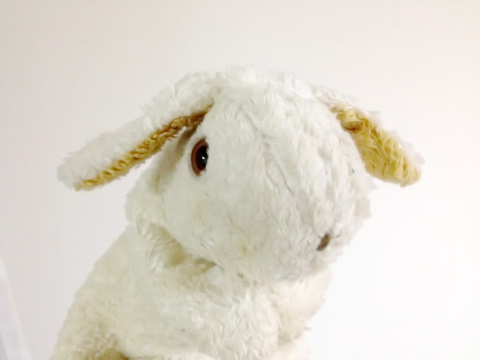
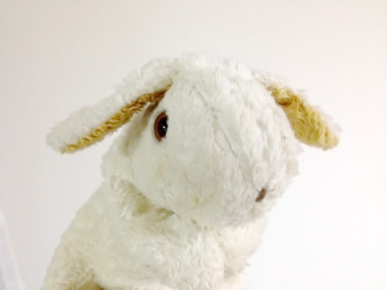
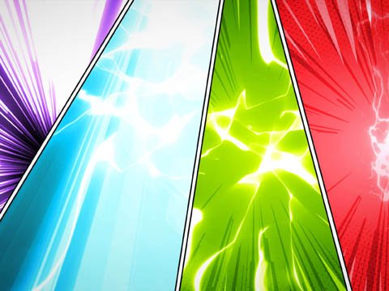
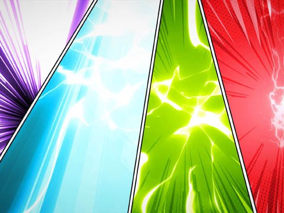

- ボクがヒミコだったころの話
- 序
- 第１章 死のとなり
- 第２章 はじめての友だち
- 第３章 山と神と王
- 第４章 ドライブ・イン・ブルー
- 第５章 巨峰
- 第６章 黒き町
- 第７章 剣と神話
- 第８章 埋み火
- 終章 桜の季節に、また３人で
- あとがき
ボクがヒミコだったころの話
この物語の登場人物には、性別が設定されていません。
お好きな性別で想像して御覧ください。
序
博多のラーメン屋。
もう10時も回った、遅い夕食。
ラーメンをすすっていると、テレビのニュースが、満開の桜を映した。
ふと視界に飛び込んだ、咲き乱れる千本桜。
それは10年前の事件以来、見ないようにしてきた景色だった。
第１章 死のとなり
４年生の２学期、小学校を転校した。
前の席のヤツをハサミで刺したのが原因だった。
ケンカに負けるのは、覚悟もなくひとに食って掛かるバカだ。
相手を殺す覚悟があれば、ケンカは負けない。
だけど、４年生のその件以来、相手が死ぬかもしれない、朝起きたらボクは殺人犯になってるかもしれない、という恐怖から、めっきりひとと争うことはなくなった。
親はいろいろとたいへんだったみたいだけど、ボクは転校がすべて。
友だちも、教室も、過去を剥ぎ取るように、なにもかも一新されて、それでお終い。
転校した小学校でも、相変わらず。まわりはぜんぶバカ。
いつでもひとを殺せる、という思いと、でも実際に刺すときの感触、あるいは、刺した後のことを思うと、「バカ」からは距離を取るようになった。
親友と呼べるのは、中学に入って知り合った、ツキとゴロウマルくらい。
中１の夏、３人で「邪馬台部」を作って、邪馬台国を探した半年ばかりが、ボクの頂点。いまから10年ほど昔。立花南中。その１年１組での体験だった。
部長はツキだっのかな。
ツキ、あるいは、月足って名字でしか呼ばなかったけど、名前はカオルだったと思う。
ボクを邪馬台国探しに引き込んだ、張本人。古代史好き。
ボクが親友だなんて言っちゃいけないくらい、素直ないい子。
カバンにラノベが入っているのが見えて、話す内容も夢見がちで怪しかったんで、そっち系とはちょっと距離を取りたいとは思ったんだけど、いつの間にか飲まれてた。
出会って間もない頃に、「筑紫は月足から来ていて、中国の北方にあった大国、月氏に由来している」と早口で捲し立てられて、ラノベの読み過ぎだよね、とは思ったけど、口には出さなかった。
ゴロウマルはぬぼーっとした変人。
下の名前はジュン。
あんまりひとの話を聞かないし、空気も読まない。でも、だからこそ付き合いやすいってゆーか。
ツキが、「ゴロウマル」って呼んでるのを聞いて、最初は愛称だと思って、それでボクも呼び捨てにしてたんだけど、本名だった。
初対面で呼び捨てにされても気にしないタイプ。でも、そう見えて実はナイーブ。一、二ヵ月経ったあとで、「あのこと、すごく気にしてた」なんてことを言い出す。むしろ古い話は、ツキのほうがきれいに忘れる。
そして、３人のしんがりに控えしは、轟日向、またの名をヒミコ、こと、転校生のボク。以下略。
以上が、立花南中学邪馬台部のメンバー。
とは言え、ボクがふたりと同じ学校に通ったのは半年。
その後、邪馬台部がどうなったのかは知らない。
正直に言うと、ふたりのことは親友どころか、友だちと呼んでいいのかすらわからない。
人生の落伍者だから、ボクは。
転校した先の中学でも問題を起こして、三年で転校、高校には行ったけど、中退。いまは、博多のちょっと怪しい感じの店でアルバイト。
ツキ――月足は、今頃、院への進学でも決めて、社会学者への道を歩んでると思う。
思ってた。
その立花南中の半年を除くと、小学校、中学校と、ろくな思い出がない。
そもそも、小学校の入学式に行けなかった。
これはお母さんがズボラで、住民票の移転の手続きをしていなかったせい。
お母さんは、八女市の黒木町ってところの出身。高校の３年のとき家出して、福岡に出たんだけど、移転の手続きもなにもしてなかったらしい。
友だちの部屋を転々として、お金が貯まってようやくアパートを借りて、そこにお父さんが転がり込んで、ボクが生まれた。的な。そして、ボクが小学校に通い始めるまで、ふたりは入籍していなかった。
ボクたち家族――ボクと、お母さんと、お父さんは博多区の南の端にあるアパートに住んでいたけど、賑やかな博多の街と比べると、ずいぶん静かな場所だった。
距離的には、博多駅よりも太宰府に近い。
それでも、中学に入って、八女に引っ越してきたときは、「博多から引っ越してきたひと」として、ちょっとした都会っ子扱いで、くすぐったかった。
学校では話さないよ。家のことは。
保育園の頃、お父さんとお母さんの名字が違うって大声で笑ったヤツがいて、ずっと引きずってた。
両親が入籍する前のボクの名字は、お母さんの姓の轟。お父さんは久木。それにお父さんと言っても、毎日家にいるわけじゃなかった。
「それはお父さんじゃない」
と、同じ園に通うヤツに言われて、それで保育園では、お父さんのことをお父さんとは呼ばなくなった。
じゃあ、だれなんだろう、このひとは、って、ずっと思ってた。
小学生になると同時に、両親は入籍、ボクは、久木日向になった。
これでもうお父さんのことでバカにされずに済む、と思ったけど、こんどは、同じ園の連中から「なまえがかわった！」「ニセモノだ！」と囃された。
子どもの目からしたら、なんでもないからかいのネタなんだろうけど、小さい頃のボクは、いつお父さんが消えてなくなるか、そればかりが不安で、ニセモノって呼ばれるたびに恐怖に駆られた。
怖かった。だって、お父さんは他人だったから。
いまでこそ、子どもがどうやって生まれるか知っているけど、就学前のボクには「名字は違うけど、血は繋がってる」と言われてもピンと来なかった。
「今月はまだ、お父さんが生活費入れてないから」
と、ふりかけだけで晩ごはんを食べて、そのふりかけさえなくなる日々。
お父さんってのは、「なぜかわからないけどお金をくれる他人」だった。
結局、お父さんがいたのは４年間だけ。ボクのハサミの事件のすぐあとにいなくなった。
しばらくは、養育費をもらっていたみたいだけど、すぐに途切れた。ボクが中学に入るころに離婚が成立。ボクの名はまた轟に戻って、お母さんは出身の八女市に、就農支援のプログラムを見つけて、引っ越した。
おじいちゃん、おばあちゃんの家と同じ市に戻ったとはいえ、新しい部屋は車で30分以上離れた町にあった。地元だから戻ったと言うより、決め手は、家賃。農協が提供する家に、月５千円で住めるというので、そこに決めた。
だけど、そこでもまた、お母さんの手続きがズボラで、入学その他もろもろの手続きが間に合わず、最初の一ヵ月は博多区の中学に通い、その間の生活費は、これからお世話になる八女の農協の有山さんってひとに頼ってしのいだ。
住所移転の手続きも有山さんに頼りっぱなし。
ボクにも似たようなとこはあるけど、遺伝するんだろうか。こういうところも。
小６の冬休みかな。お母さんとふたりで、就農支援の面接に行ったとき、はじめて自分の名前の由来を知った。
いまではダム湖に沈んだ、お母さんのお母さんが住んでいた村。その村が湖底に眠る「日向神湖」から取って、お父さんがつけたんだって。
つまり、おばあちゃんの村はなくなって、名前だけがボクに残ったことになる。
そして、その名前をつけたお父さんはボクたち母子を捨てて、「日向」という名前だけがボクに残された。
お父さんに捨てられたのは、ボクの事件のせいだし、いまもボクの日向という名前を、どう受け止めていいかわからない。
ボクとお母さんはソリが合わなくて、何度かお父さんを探して、逃げ込みたいと思ったことがあるけど、ずっと小４のときのハサミ事件が胸に支えていて、できなかった。
まあ、いまにして思えば、向こうの親が大騒ぎしただけで、そんな大きな傷でもなかったんだけど。
その後のことを言うと、ボクが高校の２年のとき、お母さんは再婚して、斎藤になった。
ボクは祖父母の家にいたし、斎藤になったと知ったのは、少し経ってから。
再婚するって話は聞いてたけど、それがいつか、相手がだれかも知らされず、自分の名字がわからないという空白期間があった。
そうやって振り回されながら、いまのボクもどうやら斎藤日向らしいのだけど、近頃のボクは、日向と書いて、「ひゅうが」と読ませてる。
というか、なにも言わないとみんな「ひゅうが」って呼ぶし、こちらでもあえて訂正せずにいると「ひゅうが」「ひゅうがさん」が定着する。そっちのほうが、イメージに合っているんだと思う。
「ひゅうがさんって、宮崎出身なんですか？」
３人にひとりは、これを聞いてくる。
「いや、生まれは福岡。母が八女市出身で、八女にも『日向』ちあっとですよ★いや、生まれは福岡。母が八女市出身で、八女にも『日向』ちあっとですよ」
「そうなんですか？ 知らなかった」
「ちなみにボク、『ひゅうが』じゃなく、『ひなた』なんですけどね」
「ええ～～～～～～～～～～っ!!」
そんなボクが、邪馬台部で駆け回ってた半年の間だけ、ヒミコと呼ばれていた。
そう呼び始めたのは、ゴロウマル。
ゴロウマルは気のいい友人。ものごとにこだわらないし、自分で言ったこともすぐ忘れるし、ボクが、
「邪馬台国って、日向神湖に沈んでるんじゃない？」
と、言ったときも、
「いや、ゴロウマル的にはありえないな」
と、言い放って、２分後にはそのセリフも忘れていた。
「どうして？」
「だって、邪馬台国は７万戸の家があったっちゅーし、人口にしたら、１戸５人でも35万人やろ。もっと広かとこじゃないと無理て★だって、邪馬台国は７万戸の家があったっちゅーし、人口にしたら、１戸５人でも35万人やろ。もっと広かとこじゃないと無理て」
と、否定しておきながら、あーでもない、こーでもないと、議論の末に、
「じゃあ、ゴロウマルはどこち思う？★じゃあ、ゴロウマルはどこち思う？」
と尋ねると、
「わかった！ 邪馬台国は日向神湖に沈んどーと！★わかった！ 邪馬台国は日向神湖に沈んどーと！」
と、言い出した。
「それ、ボクが言うたよね？★それ、ボクが言うたよね？」
「いや、そげな意味じゃなかよ、邪馬台国の聖地が日向神湖にあったい！★いや、そげな意味じゃなかよ、邪馬台国の聖地が日向神湖にあったい！」
ボクがヒミコと呼ばれていたのも、ゴロウマルがそう呼び始めたからなんだけど、あいつは翌日には忘れて、「みんなそう呼んどう」などと言った。
そう言われたときはさすがに、カチンと来て、一発ぶん殴ってやろうかと思ったけど、そのときはまだ、虫垂炎の手術から間もない頃で、おかげで手を出すこともなかった。その後親友と呼べる間柄になったのも、そこでグッとこらえたおかげだ。
変な話だけど、友だちって、そうやって作るんだと思った。
そうそう、虫垂炎。
八女に引っ越すことが決まって、その手続が遅れて、一時的に博多区の学校に通うことになった頃とちょうど重なったせいで、お母さんからは仮病を疑われて、病院に行くのが遅れた。
胃薬飲んどけって言われて飲んだけど、その直後、胃薬と胃液だけ吐いた。
最初はみぞおちのあたりが痛くて、それがだんだんと下腹部に移動、
「さっきと、痛かち言うとる場所、違うよね？ 本当はどこが痛かと？★さっきと、痛かち言うとる場所、違うよね？ 本当はどこが痛かと？」
と、詰問されたけど、本当に痛い場所が変わってるんだから、しょうがない。
そのうち座ってるのも辛くなって、ずっと横になってたら、夜になってとつぜん車で病院に連れて行かれた。
そして、その夜のうちに緊急で手術して、そのまま１週間入院。
医者からは、もう少し遅れてたら、破裂して腹膜炎や敗血症を併発したって言われて、お母さんは「この子が、症状をちゃんと言わないから」って。
お母さんは、そういうひと。
ズボラで、当てにならなくて、お父さんがいてなんとかなってた感じ。
お腹が痛くて呻いてるあいだは、ずっと神様に祈ってた。
どんな神様がいるか知らないし、どう祈ればいいかも知らない。
だけど、目を閉じてると現れる、ぼんやりとした謎の存在に向かって、助けて、死にたくない、ってずっと祈ってた。
第２章 はじめての友だち
博多区の中学に通ったのは、実質１週間程度だったと思う。
入院してるとき、担任と、ひとりふたりのクラスメイトはお見舞いに来てくれたけど、退院後、通学したのはたしか３～４回。
その頃には、八女への引っ越しも迫ってたし、学校に顔を出すのが気まずいというか、あれこれと理由をつけて、学校には行かなかった。
友だちは多いほうじゃなかった。
むしろ、顔も見たくないってヤツのほうが多かった。
それでも転校してしまえば、ほとんどの連中とは、もう二度と会えないかと思うと、寂しく感じるもんだから不思議だ。
あげくには、ボクを嫌ってたはずのヤツが、「ごめんね」とか言って涙を流すものだから、「こっちこそごめん」とか言って、ご丁寧に涙まで流した。
八女の学校はド田舎とかクソ田舎って言葉が似つかわしいほどの田舎。
近くにコンビニもないし、農協が用意してくれた一軒家は、古くて、プロパンガスで、敷地には他人の車が停めてあって、裏口の鍵は壊れて閉まらなかった。
お母さんはズボラだし、鍵もそのままになるかと思ったけど、さすがにそこだけは直してもらってた。
新しい学校に通い始める頃は、盲腸の手術からは、そこそこ日が経ってたけど、しばらく体育は見学。
見てるだけの体育ってのもタイクツなものではあったけど、いざあの輪に入って、競り合って、挙げ句下腹を押さえて「もう無理」なんて醜態をさらすよりはずっといい。初手の体育で負けたら、ボクの中学生活に暗雲が垂れ込める。
障害走の授業を見学しながら、
「あれ、ぜんぶ倒す自身がある」
って、呟いたとき、隣にいたのがツキとゴロウマルだった。
それを聞いてふたりは、己の運動音痴自慢を始めたけど、ツキが早口でひとの話を聞かないタイプだから、そうじゃない、ボクは違うんだ、と割って入れなかった。
「トドロキさんは、どんなスポーツが嫌い？」
って、ゴロウマルから聞いてきた。
いままで、「どんなスポーツが好き？」と聞かれたことはあるけど、嫌いなスポーツを聞かれたのははじめてだった。
そうだな。嫌いなスポーツの筆頭はカーリングかな。
スポーツに見えない。
あと、ゴルフも。
ボールが転がったところまで全力疾走すれば、スポーツだと認めるけど、あんなちんたら歩いてるだけのものが、スポーツなわけがない。サルでもできるって、マンガに描いてあった。
でも、カーリングもゴルフもやったことがない。
そう考えて、
「ドッジボールかな？」
と、答えた。
低学年のころ、ドッジボールは得意だったけど、高学年になるといきなり禁止された。
まあ、スポーツと言えるスポーツじゃないので当然だろう。
ドッジボールのコツは、顔を狙うことで、顔にまっすぐ飛んでくるボールを取れるヤツはそうそういない。それに、一度でも顔にぶつければ、そいつは怯む。
でも、顔を狙うことは禁止された。
たまたますっぽ抜けて顔に行っただけでも、ダメ。本人のほう見ないで、ノールックで顔に投げても、ダメ。しょうがなく、足を狙ったけど、膝から下はノーカン。相手がボールを投げるときに、こっちから顔を近づけてブロックしたら、それもダメ。ノーカンのはずの膝から下で蹴り返したら、それもダメ。
そうやってガッチガチに縛られたドッジボールは、ひらひらと逃げ回るだけのヤツが最後まで残る、お遊戯のようだった。
「あー、わかる」
って、ゴロウマル。
わかってくれるか、同士よ、って思ったら、
「全力でぶつけてくるヤツいるよねー」
と、ツキ。
ん？
ふたりが繰り広げるスポーツ音痴話は、あまりにも荒唐無稽で、ギャグだと思って聞いていたのだけど、本物のスポーツ音痴はボールを10メートル投げられないし、握力も10キロ台だし、盲腸の手術後でなくてもハードルはぜんぶ倒すらしい。
逆に器用だろう、それは。
「あと、懸垂１回も上がらないとか」
冗談のつもりで付け足すと、
「そう！ わかる！」
「いやいや。冗談やん。１回もはなかよ★いやいや。冗談やん。１回もはなかよ」
「じゃあ、トドロキ的には何回上がると？★じゃあ、トドロキ的には何回上がると？」
――この、○○的には、というのがゴロウマルの口癖で、自分のことを言うときにも「ゴロウマル的には」と言うキャラだった。
「いまやってみて！」
――この、なにも考えずに、脳裏に浮かんだことが口に出るのがツキ。口にした後で悩むタイプ。まずは悩んでから、口にするかどうか考えろ。
「いま!?」
そりゃあ、手術明けのいまでも、５回10回なら上がるとは思ったけど、そのへんで脇腹を押さえて、「もう無理」とか言い出す自分の姿が思い浮かんだ。そんなことになったら、ボクのあだ名は「ケンスイ５カイ」だ。このふたりだって、どんな素性を隠してるかしれないし、転校早々のこの時期に、変な烙印を押されたくない。
それで、ちょっとクールに、
「懸垂もスポーツじゃなかけん★懸垂もスポーツじゃなかけん」
と言って誤魔化すと、
「わかる」
「同士よ」
と、予想外の答えが返ってきた。
その後の付き合いで、ゴロウマルとツキのスポーツ音痴は本物だと知った。
ボクの性格からしたら、ほぼ正反対のこのふたりと打ち解けたことが、自分でも不思議ではあったんだけど、でも、初めてだった。こんな風に、弱点を晒け出してきた相手ってのが。
それまでは、友人関係ってものを築くのが苦手だった。
それまでっていうか、それからも。
小学校の頃からケンカばかりしてきて、問題児で、自分の思い通りにならないヤツが嫌いだった。
それが中学に入って、手術で入院してたせいもあるけど、変わったと思う。まあ、神様にお祈りして、こうやって生かしてもらってんだから、多少変わったとしても文句は言えないし、諦めてる。部活には入らずに、放課後もこのふたりと話し込んでいたら、いつの間にか「ヒミコ」って変なあだ名が付いていたことも同様、諦めてる。
ただ、
「ヒミコって呼ばれるの、どう思う？」
って、ツキが聞いてきたとき、ボクは明確に、
「ヒミコってガラじゃないよ」
と答えたはずだった。
「じゃあ、トドロキ的にはなにがいい？」と、ゴロウマル。
「ふつーに、『トドロキさん』とか？」と、ツキ。
「それはイヤ」
トドロキってのは、未就学のころに捨てたくてしょうがなかった名前だし。
「ヒナタさん？」
「それもやだ」
ヒナタ、ヒナ。変な言い方かもしれないけど、親が付けた名前ってのは、親が飼い馴らすために与えた名前だ。
「じゃあ、ヒミコ様」
「ヒミコ様～」
「ヒミコから離れろ」
「ヒミコ様～」
「走り回るな」
ちなみに、邪馬台国の話は、そんなに興味があったわけじゃない。
名前は知ってる程度で、奈良とか大阪とかにある遺跡が邪馬台国の痕跡だろうと思ってたくらい。
ツキとゴロウマルが、邪馬台国は九州にあった、ツキに至っては筑紫にあったとまで言い出して、それで興味を持つようになった。
だって、地元だよ？
ボクが生まれたのは南福岡だけど、そこだって、ツキの話によれば、邪馬台国のフヤコクだっていうし。
「そうなの？」
「太宰フャーと、フャー国、って、音も似てる」
「太宰どこ行った」
邪馬台国九州説の最大のネックは、証拠になる遺跡が出てないこと。
だけどそれは逆に、これを発見できれば世紀の大ニュースになるってことだった。
だったら、これはもう、ボクの出番じゃないかな？ みたいな、謎の自信や責任感が湧き上がったね。
この手の「謎の自信」って、自分が詳しい分野ではなかなか湧いてこない。
たとえば、多少音楽を知っていたら「自分なら大ヒット曲を作れる」とはそうそう思わないし、マンガを描いていれば「ワンピース超えくらい簡単さー」なんて考えないし、スポーツやってたら「相撲取りなんか、後ろから回り込んだら倒せる」とは言わない。言うのはいつも素人。邪馬台国はどこだって断言するのも、決まって、専門外のバカと相場は決まってる。
「ばって、九州に邪馬台国のあんなら、古墳が残っとろうち★ばって、九州に邪馬台国のあんなら、古墳が残っとろうち」
そう尋ねると、
「古墳、いっぱいあるよ？」
との答えが返ってきた。
「じゃあ、卑弥呼の古墳もあっと？★じゃあ、卑弥呼の古墳もあっと？」
中国にも伝わるほどの伝説の女王だ。大きいのが残ってるはず、なかったらウソだ。と、思ったら――
「卑弥呼の時代は、古墳時代に入る前やけん、古墳があったとしても、奈良や大阪の古墳と同じスタイルじゃなかち思う★卑弥呼の時代は、古墳時代に入る前やけん、古墳があったとしても、奈良や大阪の古墳と同じスタイルじゃなかち思う」
の答え。
なるほど、うまく逃げた。
「古墳ち、なんだと思う★古墳ち、なんだと思う」
と、こんどはツキからの質問。
「偉いひとのお墓？」
「まあ、そうやけど。でも古墳ちいうとは、『山』の代用品よ★まあ、そうやけど。でも古墳ちいうとは、『山』の代用品よ」
「山の代用品？」
「昔は、山には神様がおらしたと。やけん、古か神社は、山の前に鳥居があるだけで、拝殿のごたっとはなかつ。山が神様やけん★昔は、山には神様がおらしたと。やけん、古か神社は、山の前に鳥居があるだけで、拝殿のごたっとはなかつ。山が神様やけん」
古い神社がどんなスタイルかなんて、聞いたことなかったけど、あたまの中でイメージを組み立てながら聞いた。
「そのうち山に、神様の声ば聞くひと――巫女が住むごつなった。これが卑弥呼の時代。崇拝の対象が巫女になった★そのうち山に、神様の声ば聞くひと――巫女が住むごつなった。これが卑弥呼の時代。崇拝の対象が巫女になった」
ということは、ええっと。
「そして次の時代。王様が巫女ば殺して、自ら山ば作って、そんなかで神様になった。これが古墳★そして次の時代。王様が巫女ば殺して、自ら山ば作って、そんなかで神様になった。これが古墳」
つまり？
「古墳がどんだけ大きかち言うたっちゃ、人間が作ったニセモンの神様のおらすだけたい。本来なら山が神様やけん。ボクらが探さんといかんとは、古墳じゃのうて、卑弥呼がおった『山』よ★古墳がどんだけ大きかち言うたっちゃ、人間が作ったニセモンの神様のおらすだけたい。本来なら山が神様やけん。ボクらが探さんといかんとは、古墳じゃのうて、卑弥呼がおった『山』よ」
その話は、不覚にもボクの胸をときめかせた。
ロケットで宇宙に行く話、タイムマシーンで古代へ行く話、交通事故にあって異世界に行く話など、とんでもない話はいくらでもあったけど、所詮はどこか遠い世界の話だ。だけど邪馬台国は、手が届くところにある。しかも神様の話。
それはもしかしたら、盲腸炎で苦しんだときにぼんやり見えた神様なのかもしれない。その神様の声を聞くのが卑弥呼だったら、ボクがヒミコと呼ばれるのも悪くない。
月足ってヤツは、小動物のようなキョロキョロした目をしてるけど、なんて壮大なことを考えるヤツだろうと思ったね。
第３章 山と神と王
ボクたちの邪馬台国探しは、中学の校門前の待ち合わせから始まった。
校門脇にチャリを停めて、どこを探すとも決めずに、遠足のような気分で歩き出す。
晴れ渡った空に立ち上る入道雲をみて、ゴロウマルが、
「まさに、八雲立つだね」
と言うと、すかさずツキが否定。
なぜ。
「違うよ。『八雲』はたたら製鉄の煙やけん★違うよ。『八雲』はたたら製鉄の煙やけん」
ボクはと言えば、ヤクモもタタラもなんのことやらって感じで、しばし、成り行きを見守るしかなかった。
「そうなん？ 聞いたこつんなか★そうなん？ 聞いたこつんなか」
「八雲っちゅうとは、たくさんの雲が立ち上るちゅー意味やん？ 入道雲やったら、たくさんは立ち上らんし、たくさん雲があったら、そもそも平べったかろう？ 立ち上りはせんよ★八雲っちゅうとは、たくさんの雲が立ち上るちゅー意味やん？ 入道雲やったら、たくさんは立ち上らんし、たくさん雲があったら、そもそも平べったかろう？ 立ち上りはせんよ」
「ああ、なるほど」
ゴロウマルは納得したようなので、ボクもその場はうんうんと黙ってうなずいた。
ツキのことだから、ラノベからの知識なんだろう。
「まがね吹く」という吉備（という、どこにある地方）の枕詞も、製鉄のことを示しているらしい。
「スサノオはヤマトの日本神話に登場すうばってん、ほんとは出雲ん神様やんね★スサノオはヤマトの日本神話に登場すうばってん、ほんとは出雲ん神様やんね」
と振られるけど、まあ、このへんはよくわからないので、ニコニコしながら、適当に続きを促す。
「スサノオの『スサ』は、辰砂のこととか、砂州のこととか言われとって★スサノオの『スサ』は、辰砂のこととか、砂州のこととか言われとって――」
新車とサスの神様？
「めっちゃ走り屋っぽい」
「？？？？」
「あ、ごめん。続けて」
「でー、ええっと、辰砂やったら水銀、砂州やったら砂鉄、いずれにしても鉱山の神様ちゆー説のあると★でー、ええっと、辰砂やったら水銀、砂州やったら砂鉄、いずれにしても鉱山の神様ちゆー説のあると」
ツキによれば、古代の話でよく出てくる「葦原」というのも、湖沼鉄と呼ばれる鉄を産する地域を指しているらしい。
「やけん、オオクニヌシからスサノオ系列は、出雲のたたら製鉄系の鍛冶の神様。葦原をてんてんとして畿内まで出張ってったニニギから神武系列は、大陸系の湖沼鉄を利用してた神様。崇神から武烈が★やけん、オオクニヌシからスサノオ系列は、出雲のたたら製鉄系の鍛冶の神様。葦原をてんてんとして畿内まで出張ってったニニギから神武系列は、大陸系の湖沼鉄を利用してた神様。崇神から武烈が――」
出された固有名詞の半分も理解できず。
「ツキ、よくその名前がスルスル出てくるよね」
「オタクってのは、そういうもんだよ」
いや、オタクの一言で片付けられても。
その、スサノオから連綿と続くと自称する天皇家が根を下ろした奈良のあたりは、日本でも有数の水銀産地で、金属製の仏像とも関連が深いらしい。東大寺の大仏を作る際にも、メッキ用に大量の水銀が使用されて、その水銀の原料となったのが、奈良の辰砂。
当時の奈良は信仰の中心ではなく、むしろテクノロジー都市だったってのが、ツキの主張だった。
「水銀って、メッキに使うん？★水銀って、メッキに使うん？」
「そうだよ。水銀と金を混ぜて、青銅の仏像の表面に塗って、それを火で炙って、水銀を蒸発さすっと★そうだよ。水銀と金を混ぜて、青銅の仏像の表面に塗って、それを火で炙って、水銀を蒸発さすっと」
「なんでそげなこつ知っとーと★なんでそげなこつ知っとーと」
「錬金術の基礎知識よ」
「知らんて、普通」
「西洋の錬金術ち、メッキ術を曲解して生まれたち思う★西洋の錬金術ち、メッキ術を曲解して生まれたち思う」
「そうなん？」
と、こんなことを言い出すんだから、ツキはかなりの秀才に違いないと思っていたら、科学も古文もダメダメで、歴史に至っては、正解を知っていながら、信念に従って自分が信じた答えを書く、イノシシのような暴走キャラだった。
ツキ曰く、古代はロマンではなく、科学で読み解く。のだそうだ。
日本神話の、神武東征がなぜ起きたか、というのを考える時、ボクらは「食いブチに困った」くらいにしか考えないけど、実際に神話を追ってみると、神武は葦原をてんてんと移動し、ヤマトタケルの時代になると、逆にヤマトから山に住む民を虐殺しながら九州へ下ってくる。
ツキに言わせると、神武の時代には低温で加工できる湖沼鉄を求めて東へ移動、ヤマトタケルの時代になると冶金技術も上がり、鉄や銅の鉱山資源を求めて西へ移動したんだそう。
鉱山を奪うために、土着の民に土蜘蛛だ熊襲だのと蔑称をつけて殺した。
その暴虐を美化するために、ヤマトタケルという英雄をでっちあげた。
「いまのボクたちは、当時の人々の悔しさやら忘れて、ヤマトタケルちヒーローがおったくらいしか知らんばってん、ボクらの祖先は、殺された側やけんね★いまのボクたちは、当時の人々の悔しさやら忘れて、ヤマトタケルちヒーローがおったくらいしか知らんばってん、ボクらの祖先は、殺された側やけんね」
ツキのそんな話は、歴史でもないし、ロマンでもないし、ツキ本人が言うように科学でもない。むしろ、ケンカに近かった。
そうやって、駄弁りながら川原を歩いた。
チャリで遠くへ行っても良かったんだけど、いまは遠くへ行ってしまうと帰る自信がない。それでまずは、学校のまわり、この町のことを知るためにも、ご近所のスポット巡り。
ツキとゴロウマルには見飽きた景色かもしれないけど、ボクにはすべてが真新しかった。
町内会の看板の、区画割や標語でさえ。
それを読んでいると、ツキとゴロウマルも横から覗き込んで、「なんじゃこりゃ」「だれがこげんとこの貼り紙読むと？★だれがこげんとこの貼り紙読むと？」と漏らした。
三人の空は、ずっと飽きなかった。
「邪馬台国の候補地ち、どのへんにあっと？★邪馬台国の候補地ち、どのへんにあっと？」
って、ふたりに聞いたら、
「九州だと有名なのは、佐賀の吉野ヶ里遺跡か、甘木の平塚川添遺跡かな？」
って、答えが返ってきた。
「どっちもこっから直線20キロくらい。行けんこたなかばい★どっちもこっから直線20キロくらい。行けんこたなかばい」
って、ツキは言うけど、いや、ボクが無理。
「チャリでどんくらい？★チャリでどんくらい？」
と尋ねると、
「２～３時間？」
って。
そんなの、手術の傷が開くし、それ以前に――
「ケツが剥ける」
――って、それとなく反対してみると、ジト目で見られた。
ゴロウマルは片足を挙げて、「ケツ！」と言いながら自分のケツを叩く謎リアクション。
「ばってん、ボクは違うと思う。吉野ケ里も平塚も邪馬台国じゃなかよ★ばってん、ボクは違うと思う。吉野ケ里も平塚も邪馬台国じゃなかよ」
一呼吸置いたあと、ツキが言った。
「なして★なして」
ゴロウマルが聞き返す。
「ヒミコの時代には、山が崇拝されとーとよ。吉野ヶ里も平塚も、山じゃなかもん。平地やん★ヒミコの時代には、山が崇拝されとーとよ。吉野ヶ里も平塚も、山じゃなかもん。平地やん」
「そげん言うなら、八女も平地やん。吉野ヶ里も平塚も、すぐ近くに山はあるけん★そげん言うなら、八女も平地やん。吉野ヶ里も平塚も、すぐ近くに山はあるけん」
「どの山よ、っちゅう話よ★どの山よ、っちゅう話よ」
「そげん言いよったら、なんも見つからんっちゃなかと？★そげん言いよったら、なんも見つからんっちゃなかと？」
ツキには、邪馬台国は山である、という変な思い込みがあって、そのせいか、そのあとすぐ見つけた「高良山のふもとの祇園山古墳」には、触手が動いた。祇園山古墳は八女の隣、久留米市にあり、久留米を微妙にライバル視するツキには、複雑な感情が湧いているようではあったけど、ニョロニョロと動く触手は見えるようだった。
で、その祇園山古墳までは10キロ。
直線で。
やっぱりいまのボクでは、無理だと思った。
そうして、ココロのなかで、もっと近くで！ ボクの傷口が開かない距離！ と、祈ってたら出てきたのが、ここからすぐ近くにあるという、大塚古墳。
助かった！ すぐ近くなら大丈夫！ そこに行くしかない！
「じゃあ、今日はそこに行ってみよう！」
飛び跳ねながら言ったね。
とは言え、手術明けのボクの足取りは遅かった。
もう、軽く走れるくらいには回復していたものの、全体的に体力が落ちてる。
ふたりには、手術のことも言えば良かったんだけど、傷はもう大丈夫という自負もあったし、それで気を使わせるのも嫌で、ときどき足を止めて、スマホを向けて、記念写真を撮って胡麻化した。思えば、今回こうして外で邪馬台国を探してるのも、ボクが言い出したことだし。
凍らせてきたペットボトルのお茶の、溶けた部分を飲み干して、でも足りなくて、あたりを見渡すと、山道の途中の交差点に、ポツンと置かれた壊れかけた自販機を見つけた。
「すごいオンボロ」
「動くん？★動くん？」
「わからん。百年前から、放置されとう★わからん。百年前から、放置されとう」
百円玉を二枚入れると、百年前のペットボトルが出てきた。
百年間冷やされたペットボトルのお茶は冷たかった。
「生き返った～！」
「ぅんまーっ！」
ゴロウマルとツキは、炭酸入りの甘いドリンク……
「甘いものだと、逆にのど乾かん？★甘いものだと、逆にのど乾かん？」
と、聞いたら、
「せっかく金ば払うとに、お茶じゃもったいなかもん★せっかく金ば払うとに、お茶じゃもったいなかもん」
って。
地元の大塚古墳は、本当にボクらの生活圏のすぐ近くにあった。
しかも、ツキもゴロウマルもよく通る道なのに、ふたりとも存在を知らなかった。
こりゃあ、この邪馬台部は怪しいぞ、と思ったね。
「円墳？」
って、ツキがゴロウマルに尋ねる。
説明の看板にはっきり書いてあるけど、それを読みながら。
「前方後円墳が良かった」
って、ツキ。
「えーっ。前方後円墳は好かーん★えーっ。前方後円墳は好かーん」
って、ゴロウマル。
「なんで？」
「人の形しとうやん★人の形しとうやん」
「あれ、そうなん？★あれ、そうなん？」
「そうよ。人の形にしつらえて、死んだ王様の、『まだここにおっとぞー、この世界ば見とーとぞー』ち、言いよらすたい★そうよ。人の形にしつらえて、死んだ王様の、『まだここにおっとぞー、この世界ば見とーとぞー』ち、言いよらすたい」
前方後円墳が人の形だというのは初耳。
あとから調べたけど、はっきりとそういう説には行き当たらなかった。だけど、よく見ると前方後円墳には腕のようなものもあった。
ツキが言ってた言葉を思い出した。
最初、ひとは山を拝んだ。
それがやがて、神様の声を聞く巫女が拝まれるようになった。
次に、巫女が殺され、殺した王は自ら山を作り、そこに収まって神になった。
その神となった王が、ひとの形をした墳墓のなかで眠ってるというのは、まるで胎児にでも戻ったかのような気持ち悪さがある。
「あるいは、その胎内で蘇り、また生まれ出る日を待っている……」
って、ボクが言うと、
「エジプト神話っぽいね」
って、ツキが付け足した。
よっしゃ！ いまの発想は正解だった！ これでコイツらに一歩近づいた！
と、思ったけど、それもほんの１～２歩で、まだまだ、距離は遠かった。
ツキとゴロウマルは、説明の看板を読んで、「６世紀って……」「古墳時代のどのへん？」「イワイのあと？」などと話をしてて、そこに入れないボクには疎外感があった。
「ここが卑弥呼の墓かもしれんばい★ここが卑弥呼の墓かもしれんばい」
なんて言って割り込んだけど、あっさり否定されて、「ヒミコがヒミコのこと言うと混乱する」「トドロキかヒナタが良かっちゃなかと？★トドロキかヒナタが良かっちゃなかと？」なんて話になった。
でも、今更ヒナタって呼ばれたくない。
どうして？
理由なんかない。ただ、しっくりこないだけ。
どう言えばいいのか迷って、少しだけ、両親のことも話した。
まあ、洗いざらいってわけじゃないよ、まだ。
小学生のときクラスメイトの背中を刺したとか、お父さん、お母さん、自分の名前のこと、前の学校のこと、入院のこと。そのへんはまだ言わない。
言うにしたって、自分の気持ななんか、自分でもよくわからない。
家族の話をして、ほんの少し、しんみりしたあと、
「でも、たかがお墓やろ？ 古墳やら作らんで、そのまま山の上に作ったらよかったとに★でも、たかがお墓やろ？ 古墳やら作らんで、そのまま山の上に作ったらよかったとに」
って、また古墳の話題に戻った。
「でも、山は、鉱物を掘るとに奪うとやけん★でも、山は、鉱物を掘るとに奪うとやけん」
ああ、なるほど。
「そいけん、山と違うとこに別の山ば作って墓にしたと？★そいけん、山と違うとこに別の山ば作って墓にしたと？」
「そう。鉱物ば掘ったら、土はいくらでっちゃ出るけん。神様のカラダば堀り尽くして、金も銀も自分のモンにして、残った土で、別の山ば作ったっちゃろ。自分が神になろうごとして★そう。鉱物ば掘ったら、土はいくらでっちゃ出るけん。神様のカラダば堀り尽くして、金も銀も自分のモンにして、残った土で、別の山ば作ったっちゃろ。自分が神になろうごとして」
「えらいな言いよう……★えらいな言いよう……」
「ばってん、それが現実よ★ばってん、それが現実よ」
巫女を殺し、資源のために山を奪った。
王様は土塊の山にこもって、神様になった。
だけど、本当の神様は、山から掘り出された金銀財宝――巡り巡って、ポケットのなかの百円玉なのかもしれないとも思った。
第４章 ドライブ・イン・ブルー
親に捨てられる恐怖なんてものは、ほかの子にはないらしい。
でもボクは、ずっとそればっかり。
お父さんに捨てられた５年生からは、晩ごはんがない日なんてざらだった。
夜遅く、お母さんが帰ってきて、ボクにはおにぎり一個。
「あんたが普通の子やったら、どげん良かったか★あんたが普通の子やったら、どげん良かったか」
って言葉を、何度も聞いて、いつかお母さんも、ボクを捨てるんだと思っていた。
ほかの子には、そんな不安はないどころか、笑い話なんだろう。こんな話だって。
こないだツキたちと目星をつけていた古墳――久留米の高良山のふもとにあるという祇園山古墳まで、ゴロウマルのいとこの車に乗せてもらうことになった。
そのひとは、ボクらより12歳上の、上田ケイ。農協の帽子を被って、農協の軽自動車を転がす、パッとしないひと。
でもまあ、今回はボクたち３人が主役で、上田さんは脇役だから、パッとしないくらいがちょうどいい。
「なんで農協の車で行くと。ケイちゃんの車で行こーごたー★なんで農協の車で行くと。ケイちゃんの車で行こーごたー」
って、ゴロウマル。
ひとまわり上の上田さんをケイちゃん呼ばわり。
「ひとまえでケイちゃんはなかぞ★ひとまえでケイちゃんはなかぞ」
って、上田さんも眉をしかめる。
「ばってん、こまかときからケイちゃんやったけん★ばってん、こまかときからケイちゃんやったけん」
「親戚はみんなケイちゃんケイちゃん言いよらすばってん、本来なら上田さんやろが★親戚はみんなケイちゃんケイちゃん言いよらすばってん、本来なら上田さんやろが」
「わかった。ケイちゃん」
「いっちょんわかっとらん★いっちょんわかっとらん」
と、その上田さん――ケイちゃんも車を持ってるのに、どうして農協の車で行くのかと、改めて問い直すと、
「ガス代のもったいなか★ガス代のもったいなか」
だった。
ボクたちは、助手席と後ろの席とにわかれて――
「車好きがガス代ケチるとか、ありえんばい★車好きがガス代ケチるとか、ありえんばい」
「自分の車に、中学生ば乗せとうなかとよ★自分の車に、中学生ば乗せとうなかとよ」
「好いとーひとしか乗せとうなかっちゃろ★好いとーひとしか乗せとうなかっちゃろ」
と、小鳥のようにさえずったけど、ケイちゃんは、
「まあ、好きに言うたらよかたい★まあ、好きに言うたらよかたい」
と、あしらうだけ。
ボクたちがポテトチップスの袋を開けると、
「ゴミば落とさんごつしとけよ？ 掃除してもらうけんね？★ゴミば落とさんごつしとけよ？ 掃除してもらうけんね？」
って、わりとシリアスな目で言ってきたけど、テンションの上がったボクたちは無邪気に「はーい」と答えて、ハムスターのようにポテチを頬張った。
八女から久留米へは、国道３号線を北上。
国道と言えば、広くて整備された道だって思ってたけど、二車線の道が続いた。
そう言えば、お父さんが、「上下二車線」と「片側二車線」は同じ意味だって言ってたのを思い出した。
上下二車線は、上下線とも二車線、合わせて四車線。
片側二車線は、片側で二車線、合わせて四車線。
じゃあ上下合わせて二車線の場合どう言うかと言えば、「二車線」。
たしか、小学３年生のころ、車で太宰府天満宮に行ったときに聞いた。
そのとき走ったのが、国道３号線。
「国道は古くからの街道やけん、大昔のひともこの道ば通っとったとよ★国道は古くからの街道やけん、大昔のひともこの道ば通っとったとよ」
って、お父さん言ってたし、あのころと今とは、ちゃんと繋がってるんだと思う。
ツキとゴロウマルといるときの心地よさってのは、それかー。みたいな。
農協の軽は狭くて、ガタガタ揺れたけど、それすらも楽しい。
ほんの少し坂道になるだけで、エンジン音が高鳴る。
ケイちゃん、ほんとはどんな車に乗るんだろう。
ボクの車好きは、お父さん譲りだから、ちょっとうるさいよ。
ちなみに、お父さんが乗ってたのは、レクサス。色は青。
――青だけど、正式にはヒート・ブルー・コントラスト・レイヤリング
って、言ってた。
――ひーと・ぶるー……？
――コントラスト・レイヤリング
――こんとらすと・いやりんぐ……？
お母さんも免許は持ってるけど、車に乗るのは買い物や送り迎えだけで、旅行にも行かなかったし、高速を走ったのはお父さんの車に乗るときだけだった。
「ここから左に入ると、岩戸山古墳★ここから左に入ると、岩戸山古墳」
と、上田さん……ケイちゃんが指さした。
ツキとゴロウマルは当然知ってるだろうから、ボクに言ったのだと思う。
「竺紫君磐井の墓たい★竺紫君磐井の墓たい」
「こんまえ教えたろう？★こんまえ教えたろう？」
ってツキが言うけど、聞いてたとしても覚えてないよ、そんな名前。
「たぶん、聞いてないと思う」
そう答えると、ツキとゴロウマルは代わる代わる、
「６世紀の前半に、九州の北部全体を統治してた大王」
「ヤマト朝廷に逆らって討たれた」
「物部のなんとかってヤツに」
「ただの野っぱらんごつなっとうばってん★ただの野っぱらんごつなっとうばってん」
「岩戸山は、ヤマトの古墳にも匹敵するち言われとう★岩戸山は、ヤマトの古墳にも匹敵するち言われとう」
「八女に住んどって、知らんとか言うたら★八女に住んどって、知らんとか言うたら」
「ぼてくりこかさるっばい★ぼてくりこかさるっばい」
と、怒涛の解説を見舞ってくれた。
つまり簡単にまとめると、ぼてくりこかされる★ぼてくりこかされる。
で、最後に、
「そげな説もあるち、言われとう★そげな説もあるち、言われとう」
ケイちゃんが付け足した。
久留米は都会だ都会だって、ツキとゴロウマルから聞いてたけど、やっぱり田舎だった。そう言うとまた、「博多は都会やけん」「うらやましかー」って話になるし、口には出さないけど。それにここはまだ、町のはずれ。市街地に行けばデパートもあるらしいけど、その随分手前で道を折れて、都会らしさなんてカケラもないところに、祇園山古墳はあった。
車を降りると、真っ青な空のしたに、こんもりとした土塊の山。
「祇園山ちゆーことは、京都と関係があっと？★祇園山ちゆーことは、京都と関係があっと？」
って、ちょっと知識をひけらかそうと思って聞いたけど、
「祇園は仏教用語やけん、京都とは限らんたい★祇園は仏教用語やけん、京都とは限らんたい」
と、返されて、授業で当てられて答えを間違えたときみたいな気持ちになった。
青空の下の、このやるせなさ。
ボクが先生だったら、生徒に当てるとき、
「まずは、間違った答えを言ってください」
って言うな。
３人くらい、間違った答えを言わせて、４人目くらいで、
「そろそろ正解を言ってもいいけど、次はどうかなー」
って。
賢い子にはわかんないと思うけど、学校の授業は、わかんないのが辛いんじゃなくて、恥をかくのが辛い。
閑話休題。
「古墳時代の初期ちあるけん、仏教の入ってくるはるか昔の古墳よ。祇園山っちゅー名前は、あとでつけられたもんやけん、気にせんがよか★古墳時代の初期ちあるけん、仏教の入ってくるはるか昔の古墳よ。祇園山っちゅー名前は、あとでつけられたもんやけん、気にせんがよか」
ツキが続ける。
「ふーん。そういうものなんだー」
まあ、ボクの名前もコロコロ変わったわけだし、古墳も同じなんだろう。
古墳って言うからには、古代の遺跡なわけだから、厳重に管理されているのかと思えばそうでもなくて、自由に敷地に入れたし、登れた。
形は、八女の大塚古墳と同じ、円墳。
てっぺんからは高速道路の高架がよく見えた。
「円墳が九州古来の古墳たい★円墳が九州古来の古墳たい」
と、ケイちゃんが言った。
ケイちゃんは、今回はただの運転手だけど、ツキが古代史にのめり込むきっかけを作ったひと。ツキの話の大半はケイちゃん仕込みじゃないかと思ってる。だって、中学生だよ。ツキ。
「九州が円墳、出雲が方墳、大和の古墳が前方後円墳。古墳の形は、どの時代に、どの勢力が、その土地ば支配しとったか示しとーとよ★九州が円墳、出雲が方墳、大和の古墳が前方後円墳。古墳の形は、どの時代に、どの勢力が、その土地ば支配しとったか示しとーとよ」
なるほど。と、ボクは思ったけど、ツキは、
「そげん言うたら、岩戸山古墳はヤマトの人間の墓になるやん★そげん言うたら、岩戸山古墳はヤマトの人間の墓になるやん」
と、反論した。
曰く、岩戸山古墳は前方後円墳だけど、竺紫君磐井の墓であって、断じて、ヤマトの人間の墓ではない。絶対に。そう信じてる。
「それに、円墳は九州だけじゃなかし★それに、円墳は九州だけじゃなかし」
と、学術的な反論もあるみたいだけど、細かいとこはパス。どうせ与太話だよ。ぜんぶ。
前方後円墳は、ゴロウマルの説では「人の形」だったけど、ケイちゃんの説では「出雲の方墳と、筑紫の円墳、両方を統治したっちゅー意味じゃなかと？★出雲の方墳と、筑紫の円墳、両方を統治したっちゅー意味じゃなかと？」だった。
「磐井がヤマトに討たれたとが、六世紀の前半やろ？ 雄略のあとやけん★磐井がヤマトに討たれたとが、六世紀の前半やろ？ 雄略のあとやけん――」
雄略ってのは、第21代・雄略天皇のことで、地方の豪族を強権で抑え込んで、大和政権の基礎を築いたひとらしい。
「――ヤマトに歯向かった磐井の墓ば、やすやすと作らせたりゃせんけん★ヤマトに歯向かった磐井の墓ば、やすやすと作らせたりゃせんけん」
ボクは何を聞いても、感心するばかりで、ツキの話にもうんうんとうなずき、そのあとのケイちゃんの話にもうんうんとうなずくしかなかった。
「じゃあ、磐井の墓はどこんあっと？★じゃあ、磐井の墓はどこんあっと？」
ツキが聞き返す。
「わからん。おまいたちが探したらよかたい★わからん。おまいたちが探したらよかたい」
「ええーっ、無責任！」
「ケイちゃんいっつも、思いつきでしか話さん★ケイちゃんいっつも、思いつきでしか話さん」
高速道路の車の音と、ボクたちの声は、抜ける空によく通った。
のちに聞いた話まで含めてまとめると、竺紫君磐井が九州でちょーぜつ輝いてたのは、６世紀のはじめ、第26代継体天皇の治世。
この継体って天皇は、血筋に疑いのある、要はでっちあげの天皇。
その前が暴虐で名を馳せた、アタマのおかしい第25代天皇武烈。こいつはマジでおかしい。
天皇の系譜って、１から順に覚えても味気ないので、とりあえずこのふたりを覚えるのがオススメ。ここを軸に、昔、いま、と伸ばしていく感じ。
で、継体は疑惑の天皇、武烈は狂気。中央がそんなことだから、地方の豪族もワイワイやってたんだろうけど、中央の方針に従わなかった磐井は、最終的にはヤマトに討たれた。
その、磐井を討った第26代継体から、第32代崇峻までは、じつはヤマトはガタガタで、謀略や暗殺が横行する世界だった。７世紀に入って、第33代推古天皇の遣隋使のあたりからようやく、そこそこ整った天皇の系譜が現れる。
「はい、それじゃあ、第33第推古天皇の、摂政の名前、わかりますか？」
「はいっ！」
「じゃあ、まずは間違った答えから、どうぞ」
「え、ええっと……う、うずまきナルト？」
「うずまきナルト！ 不正解！」
「ほかに、間違った答えがわかるひと！」
「はいっ！ 花剣のビスタ！」
「不正解！」
ケイちゃんの話では、磐井の死後、推古の時代まで、九州にもなんらかの豪族があって、力を持っていたはずで、そのひとが第一回遣隋使を派遣した、ということだった。
じゃあ、そのひとが古事記日本書紀に登場するどのひとかとなると、
「わからん。内紛か、あるいは、百済に討たれたかして死んだかしとう★わからん。内紛か、あるいは、百済に討たれたかして死んだかしとう」
と、これもまた投げっぱなしのお話だった。
「じゃあ、次は、先生に歴史の問題を出すコ～ナ～！」
「キャツキャッ！」
「みんなが歴史の人物に関する問題を出して、先生が答えます。先生が間違ってたら、芸能人のモノマネをします。出題者は、モノマネして欲しい芸能人と、歴史の問題を言ってください。ヒントは３つまで。先生が質問するので、ヒントは正確にお願いしますねー」
「はいっ！」
「じゃあ、トドロキさん！ まずは、だれのモノマネをすればいいのかな？」
「ヒカキン！」
「ヒカキン!? では、問題をどうぞ！」
「11歳で即位した天皇はだれでしょう！」
「11歳で!? いたかな、11歳……じゃあ、ヒント１個目、それは、何時代の天皇ですか？」
当時、ヤマトは朝鮮半島の百済、筑紫は同じく新羅と手を組んでいて、百済と新羅とは戦争状態だったから、日本が一枚岩だったとは考えにくい。だから天皇周辺もガタガタだった。
その少し後、中国で、南北朝時代の末、随が統一を果たすと、その影響は朝鮮半島に及び、日本にも波及して、ようやく日本も統一された。それがちょうど推古天皇と、その摂政、聖徳太子の時代。
ただこれは、ボクが聞いたことを、ボクの言葉でまとめたものでしかないから、真の歴史ではない。ただ、こうやって、自分のなかで物語を作ると、いつ、何が起きたかってのが、ちゃんと形になると思っている。つまり、歴史の下書きができる。あとは、ちゃんとした知識で、その下書きに線を重ねて、色をつければいい。
祇園山古墳のあとは、すぐそばにある久留米っ子の聖地・高良山に登って、日が傾き始める前にはもう、帰りの車の中。
30分ほどで八女へ。
この小旅行で、ツキやゴロウマルが話していることの１割も理解できなかったけど、３人の距離は、ぐっと縮まったと思う。
「ただいまー」
って、いつものように家に帰ると、
「おかえり。どこ行っとったと？★おかえり。どこ行っとったと？」
って、お母さんの声。
これもまあ、いつものことで、
「友だちと遊んでた」
って、普通に答えたんだけど、お母さんはため息を吐いて見せて、
「だれの車で、どこに行ってたと？ ち、聞いとると★だれの車で、どこに行ってたと？ ち、聞いとると」
と、改めて聞き返した。
見られてたんだ。めんどくさ。
「友だちのいとこの車。久留米まで。ハイキング」
本当は古墳見学？ 実地調査？ みたいなものだけど、ボクにとってはハイキング。
「そう。知らんひとの車で？★そう。知らんひとの車で？」
「友だちのいとこち言うたやんね★友だちのいとこち言うたやんね」
「まあ、よかばってん。こんど車でどっか行くときは、ちゃんと事前に言わんといかんよ★まあ、よかばってん。こんど車でどっか行くときは、ちゃんと事前に言わんといかんよ」
めんどくさ。
「なして★なして」
「ちゃんと言うとかんと、どげん事故か事件にあうか、わからんやんね★ちゃんと言うとかんと、どげん事故か事件にあうか、わからんやんね」
事故や事件は、行き先を言おうが言うまいが、あうときはあうし、それに学校行ったって、家のなかにいたって、事件にも事故にも……と思ったけど、
「はいはーい」
その場は、やり過ごした。
第５章 巨峰
スマホで地図を見て、遺跡や古墳を探す時間が増えた。
寝転がってスマホを操作して、顔に落としたことが３回。
うち１回は鼻の上に小さいキズを作った。
スマホは田舎に引っ越す交換条件として買ってもらった。
いずれにしても、中学に入ったらスマホは買ってもらうって約束はしてたけど、お母さんのことだし、反故にされる可能性は高かった。借金でクビが回らなくなってたのに、ちゃんと買ってもらえたのは、農協の有山さんのおかげ。いくらか知らないけど、給料を前借りしたって話も聞いた。
有山さんは、町の有力者。農協のエラいひとでありながら、自分の会社の会長。
お母さんからしたら、良い金づる。
でも、近頃は「甥と結婚しろ」「見合いだけでもしてくれ」とうるさいと、アタマを抱えていた。博多で働いてるときも、同じようなことは、顔なじみの客から何度か言われたらしい。
有山さんが薦める甥がどんなひとかは知らないけど、農家の立派なひと、あるいは有山工業のエラいひとかなんかだったとしたら、うちのお母さんに嫁が務まるはずがない。
まあ、お母さんも、見てくれは悪くないと思う。30代後半には見えないし、それに外面もいい。
でも、うちのなかじゃ最悪。
「嫁にもらおうと思うな、おまえが嫁になれ★嫁にもらおうと思うな、おまえが嫁になれ」
とか、ぶつくさ言ってる。
まあ、そういうひとでも良ければ問題ないんだろうけど、とは言え、男と女がなにをするか知る歳になって、親の再婚話はキツい。
と、そんな折。
ツキが「有山さんから」と、巨峰を持ってきた。
有山さんはよく、野菜や果物を持って来てた。食べきれないくらい大きい箱で。それをぜんぶ断ってたら、こんどはこうやって間接攻撃で来た。
ツキにもゴロウマルにも、ボロ屋に住んでることを知られたくなくて、住所は教えてなかったのに、有山さんが教えたらしい。まったく。
玄関先で、ボクに手渡されたんだけど、ボクの一存じゃ決められなくて、
「どうする？ もらっておく？」
って、お母さんに聞いたら、一言目、
「持って帰ってもらって」
だったけど、二言目、
「いや、でも、一応受け取って」
と、いったんは受け取ることになった。
なんでそう判断したのかは知らん。聞いても、わかる返事は返ってこない。それがうちのお母さん。そして、その巨峰を返しに行くのは、ボクの役目だった。
こうなるのも、だいたいわかってた。
ツキも、めんどくさいモン持ってくるなーとは思ったけど、めんどくさいのはうちのお母さん。ツキは悪くない。
ツキが帰るのを見送って、お母さんから、
「申し訳ないけど、こういう品は受け取れませんち、丁寧に言うて返さんといかんよ？★申し訳ないけど、こういう品は受け取れませんち、丁寧に言うて返さんといかんよ？」
と、念を押されて、有山さんのお屋敷へ向かった。
有山さん宅は、馬鹿みたいに広い屋敷だった。
昔話の庄屋様が住んでるみたいな、門がある家。
玄関の呼び鈴を押しても、返事はなくて、10分くらいぼーっと待った。
もう１回呼び鈴。
無反応。
「おとどけものがあってきましたー」
大声で２回。
「はーい、少々お待ち管さーい」
やっとなかから声が返ってくる。
出てきたのは奥さんだと思う。
「用のあるときは、玄関開けて呼んでもろうたらよかけん★用のあるときは、玄関開けて呼んでもろうたらよかけん」
って、言われるけど、じゃあ呼び鈴はなんなんだ。
「いただいた巨峰を、返しにきました」
と、巨峰を差し出していると、有山さん登場。
手に持った巨峰の箱を見るなり顔をしかめた。
「ボクも食べたいのはやまやまなんですが……」
「やったら、すぐ皿に盛るけん、食べていったらよかよ★やったら、すぐ皿に盛るけん、食べていったらよかよ」
「お母さんにバレたら殺さるる★お母さんにバレたら殺さるる」
「殺しはせんよ、親やもんが★殺しはせんよ、親やもんが」
って、夫婦して笑うけど、いやいや。うちのお母さんは。
まあ、殺しはしないだろうけど、運が悪けりゃ死んでたって瞬間は、いままで何度かあった。
「ほんなこつ、遠慮せんでよかとよ。巨峰もみかんも、どこんでっちゃ配りよらっしゃっけん、そいばもろうたけんちゅうて、見合いせにゃいかんっちゅうことじゃなかたい★ほんなこつ、遠慮せんでよかとよ。巨峰もみかんも、どこんでっちゃ配りよらっしゃっけん、そいばもろうたけんちゅうて、見合いせにゃいかんっちゅうことじゃなかたい」
と、奥さん。
「ほんと、そげんばい。見合いと巨峰は別やけん、巨峰んこたもうよかたい。ばってん、見合いのことは考えてくれんねち、お母さんに言うとって★ほんと、そげんばい。見合いと巨峰は別やけん、巨峰んこたもうよかたい。ばってん、見合いのことは考えてくれんねち、お母さんに言うとって」
と、有山さん。
――じゃあ、やっぱり巨峰はくれ。
と、言うわけにもいかず。
「男嫌いっちゅうわけじゃなかとやろうに。こげんして、子のできとっけん★男嫌いっちゅうわけじゃなかとやろうに。こげんして、子のできとっけん」
って、有山さん。最低。
「あーもう、こんひた、なんば言いよらすとやろか！★あーもう、こんひた、なんば言いよらすとやろか！」
奥さんが有山さんの肩をはたいて、目を細める。
「日向も、お父さんのおったほうがよかーち、思わんとか？★日向も、お父さんのおったほうがよかーち、思わんとか？」
って……。
「いや……あんまり……」
――ぜんぜん。って言えば、良かったのに、とっさにそんな言葉が出なかった。
お父さんのことは嫌いだった。
浮気して、女を作ったって、お母さんから聞いた。
だけどその話を何％信じて良いかわからない。
ただ、お父さんがいたら、生活は楽になるとは思う。
でもそれじゃあ、金づると同じ。
「お父さんのおったっちゃ……すぐ逃げらるっとがオチやけん……★お父さんのおったっちゃ……すぐ逃げらるっとがオチやけん……」
そう言うと、有山さんも、奥さんも、苦笑い。
――お父さんがいれば、お母さんから庇ってくれる。
「もうちょっと待っとらんね。洗うてくるけん★もうちょっと待っとらんね。洗うてくるけん」
有山さんの奥さんが、巨峰の箱を持って立ち上がる。
「あっ！ よかです！ 帰ります！★あっ！ よかです！ 帰ります！」
――お父さんがいたら、ドライブに行ける。
次の日の学校は少し気まずかった。
「巨峰、おいしかった？」
なんて聞かれたら、素直に「突き返した」と言うべきか、「おいしかったよ」って繕うべきか。
有山さんは、ガハハって性格だから、「トドロキが巨峰を突き返してきた」って、言って回るかもしれないし、だったらウソついてもバレる。
でも。
――巨峰突き返した
――どうして？
――お母さんが、返してこいって
――なんでわざわざ？
――見合いを断れなくなるから、恩を売りたくない
なんて話はしたくない。
それは必然、ボクにずっとのしかかっている「お父さん問題」につながるし、いろんなことを言わなきゃいけなくなる。
じゃあ、ずっと隠してるのかって言われると、そうもいかない。いずれはバレる。
でも、バレるって何が？
体育大好きってことが？
お母さんがオトナの仕事をしてたってことが？
それがバレたからって、なんの問題があるの？
ココロのなかはしとしと雨模様。でもずっと、ワイパーで雨粒を払って、ツキとゴロウマルとは、和気あいあい。ふたりがどう考えてるか知らないけど、そんなもの、探りようもないし。
次はどこに行こうか、どんな遺跡を見ようかって、３人で話して、地図を見て、あーでもない、こーでもないって言って、アニメ見て、ケーキ食べて。
いちど「楽しい」のスイッチが入ったら、あとはもう、忘れるから。
そうやっていろいろ話してたら、何の因果か、次回のドライブは、ボクの名前の由来になった日向神湖方面へ行くことになった。運命ってのかな。こういうの。
ボク自身、おじいちゃんおばあちゃんの住んでる黒木町も含めて、見ておきたいってのはあった。どんな町か、それだけでも。だから、次のドライブも楽しみではあったんだけど、お母さんには言えない。
というか、そもそもお母さんに言うつもりはないよ。
お母さんだって好き勝手にやってるし、ボクだって好き勝手やるよ。
でも、そう思ってたら、ケイちゃんが車を出す条件として、「親の承諾を得ること」を突きつけてきて、そのための「承諾書」も渡された。なんてこった。
なんかもう、何もかもめんどくさい。
すべてを投げ捨てて、遠くに行きたい。
人間が何かしでかすときの動機に、「何もかもめんどくさくなった」ってのはあると思う。
だったら、歴史のなかに、そんな動機で動いた事件だってあっていい。
どうして、第二次世界大戦は始まった？
何もかもめんどくさくなったから。
どうして、邪馬台国は滅びた？
何もかもめんどくさくなったから。
それとも、歴史上の偉人ともなると、めんどくさくなったりはしないんだろうか。
その翌々日か、その翌日か、そのまた翌日。
ご近所の――と言っても、博多にいた感覚からするとかなり遠いんだけど――末次だか末安だか、よく覚えてないけど、スエなんとかってひとが、梅干しを持ってきた。
去年漬けたものだけど、ちょうど食べ頃になったからって。
もちろん、お母さんは断ってたけど、
「ほんの引っ越し祝いですから」
「これからうちも懇意にしてもらわんといかんけん★これからうちも懇意にしてもらわんといかんけん」
「娘も息子もやんちゃ盛で、これから迷惑かけますけん★娘も息子もやんちゃ盛で、これから迷惑かけますけん」
「見た目ん悪かつは、重々わかっとりますばってん★見た目ん悪かつは、重々わかっとりますばってん」
と、怒涛のように受け取るべき理由を述べられ、押し切られた。
この、対面での弱さが、お母さんの攻略法でもあるし、本人もそれは自覚している。客商売で身につけた外面の良さが、弱点にもなった。ちなみに、ボクに対しては対面でも強い。
その末高さんだか、末次さんだかは、
「上の子は、高校出て働いとって、ひとの手は余っとるけん、なんかあったら遠慮のう言うてください★上の子は、高校出て働いとって、ひとの手は余っとるけん、なんかあったら遠慮のう言うてください」
なんて言ってたけど、要は町から浮いてるボクらを、仲間に引き込もうとする、有山さんからの刺客だった。
「ばってん、えらかですよ。農業で働くために、博多から来らっしゃったとでしょう？★ばってん、えらかですよ。農業で働くために、博多から来らっしゃったとでしょう？」
って、持ち上げられるけど、
「ああ、はい。一応は」
お母さん、家賃が安いってこと以外、あんまり意識してないと思う。
八女に来たのは、川で溺れかけて、藁にもすがりたいと思ったときに、たまたま泳いできたワニの尻尾をうっかりつかんだってだけの話。
「うちも代々農家やけん、なんかあったら、手伝いにも行かるっし、なんでっちゃ相談してもろうてよかですよ★うちも代々農家やけん、なんかあったら、手伝いにも行かるっし、なんでっちゃ相談してもろうてよかですよ」
などなど。
この日は、「それで、見合いの件ですが……」って話は出なかったけど、付き合いが続けば、そういう話にもなるんだと思った。
スエなんとかさんが、軽トラで家に帰ると、お母さんがひとこと。
「めんどくさ」
この性格を、ボクもまんま受け継いだんだと思う。
「まあ、それが人生よ」
「へいへい。さいですな」
なんかもう、お母さんがすべてを投げ出す未来は、半分くらい見えた。
だらしないひとだと思う。
ひとりで生きて行けるのかな、だれかいたほうがいいんじゃないかな、って。
でも、お母さんに、見合いはしてほしくなかった。
もちろん、再婚もしてほしくない。
いまになって振り返ると、ボクはお父さんとお母さんの再婚を望んでいたんだと思う。
もちろん、叶うことのない夢だったし、いままで口にしたこともない。
それに、お父さんのことは憎んでいたかった。
第６章 黒き町
第二回邪馬台部フィールドワーク計画、日向神湖編。
ケイちゃんに車を出してもらうためには、親の承諾が必要ってことで、ツキとゴロウマル、そしてボクとで、プレゼン用の資料を作ることになった。
ボクはそれをお母さんに見せる気なんて、毛頭なかったし、サインは最初から偽造するつもりだったけど、そんな素振りは見せずに、いっしょに資料作りに励んだ。
資料を作ってると、いままで見えてなかったことが見えてくるし、ツキとゴロウマルにあれこれ質問して、ふたりとの溝を縮めることができたと思う。
でも一方では、ツキアシ家、ゴロウマル家には、溝を感じた。
両家とも、ボクに対してはどこか、よそよそしさがあった。
ゴロウマルの家に行ったときは、
「ちょっと」
って、ゴロウマルはお母さんに引っぱって行かれて、なにか話をしていたようだから、たぶんボクのことを言ってたんだと思う。
この頃は、どこから漏れたか、小学校の頃の話が少しずつ広まっていたし、それを聞いたんだと思う。ツキとゴロウマルも、耳にしてはいるだろうけど、ボクには言わなかった。
でも噂には、万引きの常習犯だの、保護観察がついているだの、尾ひれがついていて、その尾ひれのぶん、ボクはそんなものはデタラメだって、潔白を主張できた。
それに、そんなに悪いことはしてないと思うんだ。法律的には。まあ、ハサミで刺した件を除けば、だけど。
目を覚まして、なんかいつもと違う朝を感じることが、たまにあるけど、日向神湖へ向かう日の朝がそうだった。
なんか違う。
なんか妙にスズメの声が聞こえるとか、カーテンの色が明るいとか、朝ってこんなだったかな、と思ってると、お母さんが起きてパタパタ歩き回ってた。
「おはよー」
って、ボクが言うと、
「ああ、起きたの」
って、お母さん。
「どげんしたと？★どげんしたと？」
「これからちょっと、美容院」
「ふーん」
「そのあと、見合い。八女のなんとかってレストラン」
「えっ？」
「断るばってん★断るばってん」
「断るんやったら、もっとボロボロの格好でよかやん★断るんやったら、もっとボロボロの格好でよかやん」
「そうも言っとられんやろう？★そうも言っとられんやろう？」
「美容院代は？」
「美容院代が、なに？」
「なんか、無駄な出費」
「レストランで食事すっとよ？★レストランで食事すっとよ？」
レストランで食事するから、なに？ べつにいつもの格好でも食べられるし。
「ふーん」
「あんた、今日は？ どげんしとーと？★あんた、今日は？ どげんしとーと？」
今日は日向神湖へドライブ。言わないけど。
「決めとらん★決めとらん」
「あ、そう」
やっぱ巨峰、もらっとけばよかった。
ケイちゃんの車はハリアー。ハリアーじゃわかんないか。
いわゆるＳＵＶ。スポーツ・ユーティリティ・ビークル。
レジャーにはもってこいだし、色も青系。いいセンスしてると思った。
承諾書のサインは偽造。
べつに、バレたっていいやって感じ。
どうせお母さんがいたら、ツキやゴロウマルとこのまま付き合っていけないし、いずれまた小学校の頃みたいに、友だちから外れて過ごすようになる。いつか。いつからか。それが今日だったら、べつにもう、それでいいって感じ。
承諾書を手渡すと、ケイちゃんは、ニセモノだって見抜いたみたいだったけど、
「こっちは、これを信用するしかなかけん」
みたいなことを言って、車に乗せてくれた。
トランクのクーラーボックスには、農協のおにぎりと、農協の巨峰が入ってて、やった！ やっと巨峰だ！ って、不思議な高揚感があった。
目指すは日向神湖近くの、日向神社っていう、小さな神社。
とは言え。朝のお母さんのこともあって、ドライブ中はずっとどんより。外ばかり見てた。
途中、コンビニに寄って、ケイちゃんがジュースを買ってくれた。
ツキはミルクティ、ゴロウマルはコーラ、ボクは柑橘系の炭酸。
車に戻ると、ツキが乗り込んで、ボクが乗って、ゴロウマルは助手席に座るかと思ったら、ボクを奥へ押しやって隣に乗ってきた。
「ゴロウマルだけ前でタイクツしとったけん★ゴロウマルだけ前でタイクツしとったけん」
って、ボクを押しながら、アーモンドチョコの箱を見せた。
「ポテトチップスは？」
って、ツキ。
「おまいら、散らかすけん、ポテチは食わせん★おまいら、散らかすけん、ポテチは食わせん」
って、ケイちゃん。
シートベルトを結んで、車はバックから、切り替えして道路へ。３人は揺られて、右へ、左へと体を寄せ合った。
いままで、ふたりの間に挟まれることは、あんまりなかった。
いつもツキとゴロウマルが一緒で、その横にくっついているのがボク。ツキとゴロウマルって、仲良かったし、付き合ってるってウワサまであったし、割り込むのは憚られた。
「あいだにおると、ふたりの愛を引き裂いとーごたっ★あいだにおると、ふたりの愛を引き裂いとーごたっ」
冗談で言うと、
「じゃあ、３人の愛をはぐくもう」
「ふっふっふ」
と、ふたりは体を寄せてくる。顔が近い。なにこれ。
でも、このタイミングだったら聞ける。
「ツキとゴロウマル、キスしたことあるち聞いたばってん、本当？★ツキとゴロウマル、キスしたことあるち聞いたばってん、本当？」
「え？ だれに聞いた？ 見られとった？★え？ だれに聞いた？ 見られとった？」
あ、本当だった。
「ゴロウマルが言いふらした★ゴロウマルが言いふらした」
「おまえかーっ」
「じゃあ、ボクは空気になるので、気にせずにどうぞ」
ふたりの雰囲気を見て、ボクが身を沈めると、
「３人で！」
って、ツキが抱きついてくる。
「ゴロウマルも！」
ゴロウマルも抱きついてきて、ボクに「あーん」と口を開けるよう促して、アーモンドチョコをひとつ放り込む。
「ボクにもー」
って、ツキ。
ゴロウマルは、アーモンドチョコを一粒、指でつまんで、
「じゃあ、アーモンドギャグを」
って、無茶振り。
「あー、アーモンドがー、あー、あーもっど欲しいー、あーもンど欲しいー、アーモンド欲しい！」
「よしよし。次、ヒミコ」
ボクも!?
「も、もうチョコっと欲しいー」
「よしよし」
車のなかでは、こんな具合だから、30分ほど走って、黒木の町に差し掛かる頃には、ボクもずいぶん吹っ切れていた。
「このへんに、じいちゃんばあちゃんが住んどうらしか★このへんに、じいちゃんばあちゃんが住んどうらしか」
って、いままで控えてた、家族のことを話した。
お母さんが18で家出して、博多に出て、それ以来故郷に帰ってないこととか、ボクもおじいちゃんおばあちゃんに会ったことがないこととか、おばあちゃんが、矢部川の上流にあった矢部村の出身で、その村はダム湖に沈んでしまったこととか。
「ヒナタっちゅーとは、日向神湖から来とって、お父さんがつけたと。我が家のルーツを残すためちゆーて★ヒナタっちゅーとは、日向神湖から来とって、お父さんがつけたと。我が家のルーツを残すためちゆーて」
「じゃあ、ヒナタち呼ばれたほうが良かっちゃなかと？★じゃあ、ヒナタち呼ばれたほうが良かっちゃなかと？」
「ばってん、ばあちゃんの村ば沈めた名前やけん。あんまりスッキリせん★ばってん、ばあちゃんの村ば沈めた名前やけん。あんまりスッキリせん」
おばあちゃんが、矢部村を出て、黒木に移ったのが昭和35年。たぶんまだ小学生だったころ。おじいちゃんと知り合ったのは、そのあとらしい。
そんな話をしたあとで、
「ボク、たぶん、ふたりが思うとるごたっ子じゃなかけん★ボク、たぶん、ふたりが思うとるごたっ子じゃなかけん」
って、切り出した。
するとゴロウマルが、
「ゴロウマルだって同じ！ 秘密のカタマリだーっ！」
って、抱きついてきて、
「ゴロウマルの脇腹、ぷにぷにだよ、ぷにぷに」
って、ツキもイタズラに顔を寄せてきた。
ちょっと汗臭かったけど、そういうの、気にしないんだなって思った。
その日の目的地は、日向神社。
卑弥呼＝ヒムカの神社だろうという、ものすごく単純な根拠で決めて来たけど、そこに祀られていたのは天照大神、瓊瓊杵尊、木花咲耶姫という、日本神話でも古株のスーパースター級の３柱だった。
天照大神は、ツキ説では卑弥呼。しかもその敷地内にあったのが、月足コミュニティセンター。
「じゃあ、ここが邪馬台国ってことで！」
って、ツキ。
「やばい！ ツキとヒミコそろった！ ゴロウマルない！ やばい！」
って、ゴロウマル。
いつものように、説明の看板を読んで、敷地をぐるーっと回って、社や、鳥居や、石像の写真を撮った。
「神社と仏閣の違い。それは、神社は石で、仏閣は鉄」
とまた、ツキの蘊蓄が始まった。
厳密に言えば、仏閣にだって石像はあるし、神社にだって鉄製のものはある。
でも、ツキに言わせると、治水・稲作とともに広まったのが神社、冶金技術とともに広まったのが仏教寺院なのだそうだ。ツキ説。眉にツバつけること。
そこからほんの目と鼻の先に、日向神湖はあった。
ボクのおばあちゃんの村が沈んだ湖。
ツキもゴロウマルも、それからボクも、てっきりそこまで足を伸ばすものだと思っていたのに、ケイちゃんに咎められた。
曰く、親にサインをもらった承諾書に、日向神社のことしか書いてないからって。
「でも、そげんこつ言うたら、コンビニに立ち寄るとかも書いとらん★でも、そげんこつ言うたら、コンビニに立ち寄るとかも書いとらん」
「コンビニは途中やけん★コンビニは途中やけん」
「ちょっと迷ったことにしたらよかよ★ちょっと迷ったことにしたらよかよ」
「じゃあ、レポートに『迷って日向神湖まで行った』ち書くか？ 書いたら、二度と承諾してもらえんかもしれんばってん、そいでよかか？★じゃあ、レポートに『迷って日向神湖まで行った』ち書くか？ 書いたら、二度と承諾してもらえんかもしれんばってん、そいでよかか？」
みたいなことを、しばらく言い合って、日向神湖はまたこんどってことになった。
ツキはうらめしそうに、地図を見て、じゃあこんど来るときは、ここと、ここ、それにここも回りたいと、神社や遺跡をピックアップ。そのなかに、桜の名所・千本桜があがった。
矢部村が日向神湖に沈む折、ときの村長が「矢部村をひとの記憶に残すため」と植樹した、文字通り、千本の桜があった。
湖を囲んで立ち並ぶ、千本のソメイヨシノは、毎年春先に、満開の花を咲かせ、湖に沈む村に花びらを手向ける。
その話はまるで、湖の底に邪馬台国の女王、卑弥呼が沈んでいるような錯覚を、ボクらに与えた。
「どうする？」
ツキが、ボクの顔をのぞく。
「行ってみたい」
ボクは、静かな声を返した。
「それじゃあ、桜の季節にまた」
ゴロウマルが言うと、
「それまでは、地元の遺跡を見て回ろう」
ツキが言った。
「そうだね。桜の季節になったら、また三人で来よう」
第７章 剣と神話
邪馬台部の３人＋ケイちゃんで、日向神湖に行ったことは、その日のうちにお母さんにバレた。
田舎にはプライバシーがない。
見合いの席で、
「今日は、お子さんは？」
と聞かれたとこに、有山が割り込んで、
「月足んとこの子と、五郎丸んとこの子、３人で、日向神湖に邪馬台国ば探しに行っとるらしか★月足んとこの子と、五郎丸んとこの子、３人で、日向神湖に邪馬台国ば探しに行っとるらしか」
って答えたらしい。
そもそもボクが、要注意人物だ。ツキとゴロウマルの親が知ってしまったら、そこから集落中に広がるのは、無理もない。
それからというもの、お母さんとは険悪。
まあ、お母さんがボクを見る目はいつも通り。冷たくて虚ろな目。険悪だったのは、きっとボクのほう。だけど、いつものことだった。慣れるよ、そのうち。
ボクの噂はどんどん広まったし、クラスの連中は露骨にボクを避けるようになったけど、ツキとゴロウマルは変わらなかった。
このふたりには、小４の事件のことも、いずれ言うつもりでいたし、それで壊れる友情なら、それで終わりで良かった。
だって、ふたりはキスまでする仲なんだから、ボクなんかいないほうがいい。
夏休み。
小一時間バスに揺られて、隣の市、久留米まででかけた。
２＋１で別れて椅子に座って、たびたび席をチェンジして、一番うしろのシートが空いたら走って３人で占拠した。
西鉄久留米の駅で乗り換えて、ショッピングモールに行って、書店と、ホビーショップと、あとは服や靴を見て、映画館にも行った。
フードコートでハンバーガーを食べながら、お父さんのことを話した。
「お父さん、久木洋介ちゆーと。やけん、小学校んころん名前は、久木日向やったと★お父さん、久木洋介ちゆーと。やけん、小学校んころん名前は、久木日向やったと」
「微妙に踏んでる」
「踏んでるって？」
「韻。ラップんごたる★韻。ラップんごたる」
どんな話をしても、他愛のないネタにつないで、くすくす笑いあった。
久木だった頃がいちばん楽しかったけど、いまはそれ以上。
さすがオレたち！
いつかお母さんから離れて、お父さんを探しに行く。
じゃあ、それがヒミコにとっての邪馬台国だ。
お父さん・イズ・邪馬台国！
そうやって、小４の事件の手前まで話した。
そこから先は、踏ん切りがつかなかったけど、もう、どんな噂が立ったって大丈夫。ウソはウソだし、本当のことは全部話す。それが正解なんだと思った。
その前後だったかな。
農協の近くで、青いレクサスを見かけたのは。
青いレクサスなんて、お父さんの車以外で見たこと無いし、ぜったいお父さんだと思ったけど、遠くて追いかけられなかった。
家に帰ると、お母さんは普段通りだったし、もしかしたら農協のひとに会いにきただけかもしれない。まあ、見間違いだった可能性もあるけど、でも、まさか。ボクが車を見間違えるなんて、ないよ。
それでボクたちの邪馬台国探しがどうなったかと言えば、いろんなことを総合して考えて、八女のお隣の市、みやま市にあった可能性が高いってことに落ち着いた。
わざわざ日向神社まで行ったのに、案外ボクらは冷静だった。
調べてみると、みやま市、かつての山門郡は、邪馬台国の有力候補。
つまり、あれこれと考えた末に、一周して定説に戻ってきたことになる。
「じゃあ、どうして一般には広まっとらんと？★じゃあ、どうして一般には広まっとらんと？」
ボクが聞くと、
「広める方法はあるとよ★広める方法はあるとよ」
ツキが答えた。
「ほう」
「神話にしたらよか★神話にしたらよか」
「えっ？」
「日本は万世一系だって神話で、ヤマト朝廷の存在が信じられたごつ★日本は万世一系だって神話で、ヤマト朝廷の存在が信じられたごつ」
「ヤマト朝廷は存在するやろ★ヤマト朝廷は存在するやろ」
「だから、神話ち。それが★だから、神話ち。それが」
「ええーっ」
「神武から崇神、垂仁から仁徳、履中から雄略、清寧から武烈、継体から崇峻、推古から弘文。これぜんぶ別の王朝ち思う★神武から崇神、垂仁から仁徳、履中から雄略、清寧から武烈、継体から崇峻、推古から弘文。これぜんぶ別の王朝ち思う」
「てゆーか、よくその名前がスルスル出るね」
学問は神話になることはない。
だから、邪馬台国がどこかわかったとしても、それが後世に残ることはない。学問は消えゆき、残るのはただ、神話だけ。
夏休みの間も、図書館や、コミュニティセンターで話したけど、話題は日本神話や伝承、神社仏閣の話にとどまらず、稲作の伝播、冶金技術、ギリシャ神話などに及んだ。
そのなかでツキが、
「鉄と物語は、同時に発生してる」
って言い出したことが、印象深かった。
鉄と物語って、いっけん無関係に見えるけど、ツキは、
「物語のあるとこには、必ず鉄がある」
と言い出した。
「物語っていうか、神話？」
問い返してみると、神様が出てくる話を「神話」って区分するようになったのは、昨今の話であって、神話の時代にはすべて同じくくりの物語だった、って。そりゃそうか。
物語ってのは、そもそも戦争を美しく言い換えるために生まれた。
その発祥は４千年前。メソポタミアのシュメール文明から。
鉄も同じ頃に、メソポタミア近くのヒッタイト文明から生まれている。
その鉄の伝播に合わせて、物語も伝播した。
というのが、ツキが唱えた説だった。
シュメール文明……シュメールか……ええっと……。
「スメラミコトのスメラって、シュメール文明のシュメールから来てるらしいよ」
って、ボクが調べたことを教えると、
「安易」
の一言で切り捨てられた。
「なんで！」
「名前やら、なんでっちゃ似とるごつ言わるっけん★名前やら、なんでっちゃ似とるごつ言わるっけん」
「それ、ツキの得意技やん★それ、ツキの得意技やん」
ツキは、「どこそこの文化が、どう伝わった」みたいなものはぜんぶ陰謀論だ、って片付ける。それも極端だとは思ったけど、もっと細分化されて、バラバラになったものが吹き溜まって、その土地の物語まで吸い上げて一個になるのが文化だ、って、ツキは言った。
「日ユ同祖論みたいなものあるやん？★日ユ同祖論みたいなものあるやん？」
「なにそれ」
「日本とユダヤが同じルーツを持ってるって話」
「そげなんあると？★そげなんあると？」
「うん。そげんとは、単純化しすぎとーし、『だから日本人は○○である！』んごたるバカな話に利用されがち★うん。そげんとは、単純化しすぎとーし、『だから日本人は○○である！』んごたるバカな話に利用されがち」
「なるほど」
「ばってん、そげな話しか理解せん。普通の人間は★ばってん、そげな話しか理解せん。普通の人間は」
そして夏休みも終わって、二学期が始まる頃、ボクは、ボクが知らないボクに関するウワサを耳にした。
それは、ボクの父親がだれかわからないというものだった。
戸惑った。
初めて耳にした。ショックを受けながらも、でも、そりゃあそうでしょう、ボクはだれにもお父さんのこと、言ってないんだから、と、自分に言って聞かせたけど、そういう話じゃないことはわかっていた。僕がお父さんだと思っているひとは、他人なんだって。
それからすぐ、「トドロキの戸籍上の父親が農協に来た」って話が耳に入った。
心臓が疼いた。
お父さんがどうして？
戸籍上のって、なに？
曰く――
トドロキには、殺人未遂の過去がある。
有山さん（これは甥の方）と結婚するとなると、有山家の家名に傷がつく。
だから有山さんは、トドロキの母に、子（ボクのこと）を本来の父に引き取ってもらうよう打診した。
それで、戸籍上の父親と話し合いをしたが、「実は私も血はつながっていません」と、拒否された。
――青いレクサスを見かけたから、その話は否定出来なかった。
だけどもちろん、信じることもできない。
それこそ、ボクのことを都合よく理解するための神話だ。
いままでだって、万引きの常習犯だの、保護観察だの、根も葉もないウワサはいくらでもあった。
今回だって同じだ。自分に言い聞かせたけど、悲しみが止まらない。
仮に万が一、このウワサが事実であったとしても、久木洋介はボクのお父さんだった。あの面倒くさいお母さんと一緒に、ボクを育ててくれた。それに、お父さんがいた４年間は、幸せだった。
でも、本当の本当に、ウワサが本当だったら？
ボクだけ騙されてて、まわりのみんなは真実を知ってしまっているとしたら？
ツキとゴロウマルに、久木だったころは幸せだったって言ったのに、いつかお父さんを探しに行くって言ったのに、これじゃあピエロだ。
ただの噂話だって切って捨てることはできるけど、万が一本当だったら、ますます惨めだ。
第８章 埋み火
昔っから、カッとなると、まわりが見えなくなるタイプだった。
お母さんが、黒木の家を飛び出したときも、そうだったんだと思う。
今回は、できるだけ冷静でいようと、ウワサのことは気にしないことにした。
あとは、ツキとゴロウマルに、４年生のときの事件のことを話して、ほかのことはぜんぶ根も葉もないウソ！ 過去のことはもう、十分反省してるし、同じ過ちは繰り返さない！ って宣言すればいいだけ。
朝、登校してクラスに入ると、そこにいるだれもが声をひそめた。
ボクのほうを、一瞬だけ見て、また目をそらして、普段通りを装って話し始める。
ボクが歩くと、その周りだけ声を潜めた。
ツキもゴロウマルも、まだ見えない。
息が詰まる。
助けて。
５分、10分と、刃のような時間が過ぎて、ようやく、ツキの姿が見えた。
ゴロウマルもいる。
「おはよう！ 遅かったね！」
最大限の明るさを絞り出した。
なのにふたりからは、うん。まあね。と、そんな言葉しか出てこない。
聞いたんだ。ボクの話を。
ボクがお父さんだって言ってたひとが、本当のお父さんじゃないって。
「ねえ、ヒミコ」
ツキが静かに、口を開く。
「お母さん、再婚する気はなかと？★お母さん、再婚する気はなかと？」
なんなんだよ、それ。
なんで開口一番がそれなんだよ。
聞きたくないよ、お父さんのことも、お母さんのことも、再婚のことも。
ボクがひとつ、舌打ちしてみせると、ツキの態度が変わった。
「なに、その態度。心配して言ってやりよーとに。感じん悪かー★なに、その態度。心配して言ってやりよーとに。感じん悪かー」
ツキに、そういう口調で言われたのは初めてだった。
総毛立った。
つぎの瞬間にはもう、ボクはヒミコじゃなかった。
「うっせーわ。クソが」
静かに吐き捨てると、ゴロウマルが肩に手を掛けてきた。
「ちょっと、待てよ」
って言われて、半年前なら、ぶん殴ってた。
だけどそうやって壊したくない。
「なんね、それは。ヤクザの子はヤクザち言うことね★なんね、それは。ヤクザの子はヤクザち言うことね」
ゴロウマルがボクを責めるけど、ふざけんなよ。
「だれがヤクザて？ なんでそげんか話、信じとーと？★だれがヤクザて？ なんでそげんか話、信じとーと？」
低い声で言い返した。
お母さんが水商売してたのは言ったけど、それがすべてだよ。
その店がヤクザだったかどうかなんて、知らないし。
これ以上、ふたりの声を聞きたくなくて、
「畿内んモンはウソばっか信じとーちゆーとったくせに、ぜんっぜん変わらん！ 同じやん！ ウソばっか信じて！★畿内んモンはウソばっか信じとーちゆーとったくせに、ぜんっぜん変わらん！ 同じやん！ ウソばっか信じて！」
って、声を荒らげた。
教室を飛び出して、チャリで川原まで走って、草むらに座ってわんわん泣いた。
ケンカに負けて泣いたこともないのに、涙が止まらなかった。
家に帰って、お母さんともケンカ。
「どこほっつき歩いとったとね、こげな時間まで！★どこほっつき歩いとったとね、こげな時間まで！」
って、
「あんたに言いとうなか！ あんたんせいで、ヤクザん子はヤクザち言われた！ あんたんせいで友だちもでけん！ あんたんせいで、ケンカするしかなかと！★あんたに言いとうなか！ あんたんせいで、ヤクザん子はヤクザち言われた！ あんたんせいで友だちもでけん！ あんたんせいで、ケンカするしかなかと！」
あとは取っ組み合い。
力はボクのほうが強いけど、お母さんは馬乗りになって、ボクの盲腸の手術あとをぐいぐいと拳で押してきた。
もう手術から日は経ってるし、痛みはないけど、傷を押されるのは嫌だった。
これなら、殴られたほうがいい。
泣き叫んで、体を丸くしてもやめない。
「謝らんか！ もう二度と言いませんちゆーて！ 謝らんと、傷ん開いて死ぬぞ！★謝らんか！ もう二度と言いませんちゆーて！ 謝らんと、傷ん開いて死ぬぞ！」
って、こんな親がいるか？
次の日。
起きて鏡を見ると、顔に痣があった。
幸い、盲腸の傷口は開いてなかったけど、気にしはじめると、皮膚の奥に痛みのようなものを感じた。
お母さんは、無防備に布団で寝てる。
ボクは、家にもいたくなかったし、学校にも行きたくなくて、チャリで久留米の祇園山古墳まででかけた。
風の強い国道を、１時間半。
てっぺんに登って横になってると、みんなで来た時のこと思い出して、泣けてきた。
ゴロウマルから、ヤクザの子はヤクザって言われたけど、あの鬼のような母の子がボクだよ。ヤクザなんかより、きっともっとひどいよ。
このまま家出しようかとも考えたけど、しばらく泣いた後、ふたりに謝らなきゃいけないと思って、それでまたチャリで八女に帰った。
家に帰ると、玄関から知らないおじさんが出てきた。
睨みつけてると、
「有山です。今日はその、なんたらかんたらで、うんたらかんたら」
と、聞き取れない言葉をボソボソと吐いて、車に乗って去っていった。
たぶん、こないだの見合い相手だ。
何やってんだ、クソが。
もう、何も考えられなかった。
何もかも嫌になったとか、それすらもない。
納屋のなかにあったポリの容器を引っ張り出して、中身は軽油か、ガソリンか、よくわかんないけど、そのへんに撒いて火を付けた。
クソが。
クソ。クソ。
死ねよ。ババァ。
燃え上がる火の手を見ながら、そうやって繰り返していると、胸の中に後悔の念が渦巻く。
いまなら助けられる。
ひとを呼びに行けば、まだ間に合う。
でもそれも、他人事。体への司令は届かない。
ツキ、ゴロウマル、ごめん。あんたらが、ヒミコってあだ名つけたヤツは、こんなクズだよ。友だちになってくれてありがとう。ボクももう、死ぬよ。たぶん。
そう思いながら、うずくまって涙を流していると、炎の中から、形相を変えたお母さんが飛び出してきた。
不意のことで怯えていると、お母さんは、ボクの手をつかんで、車へと引きずった。
「ごめん、お母さん、ごめん」
謝ってみるけど、お母さんはなにも言わない。
助手席のドアを開けて、なかにボクを蹴り込む。
「なんで火ばつけたか、自分でもわからん。そげんつもりはなかったと。ごめん。お母さん★なんで火ばつけたか、自分でもわからん。そげんつもりはなかったと。ごめん。お母さん」
お母さんは運転席へ。エンジンをかけて、ギヤをドライブに。
「ベルト」
促されて、シートベルトを締めると、車が出る。
「どこ行くと？★どこ行くと？」
「黒木」
おじいちゃんおばあちゃんの家に？ どうして？
もう夕暮れも近い国道の山道。
「あんたは、お父さんのほうが好いとーやろうばってん、あんたば育てたとはあたしよ★あんたは、お父さんのほうが好いとーやろうばってん、あんたば育てたとはあたしよ」
ハンドルを握って、煙草を吹かしながら、お母さんが言った。
「旅行に行ったー、レストランに行ったー、ボーリングに行ったーちゅうて、よか思いばっかしたかもしれんばってん、あの男は、生活費も入れん。遊んでばっかし★旅行に行ったー、レストランに行ったー、ボーリングに行ったーちゅうて、よか思いばっかしたかもしれんばってん、あの男は、生活費も入れん。遊んでばっかし」
家に火を付けたことで、お母さんがボクを責めることはなかった。
「あんた、飼い慣らされとったい。あの男に★あんた、飼い慣らされとったい。あの男に」
ボクに向けた言葉の合間に、小さく、ブツブツと独り言が挟まる。
「あんたば学校にやっとに、仕事もやめたー、パートで働いて、そいだけじゃ足りんけん、夜はスナックで働いたー、晩メシも作ってやれん、朝も起きられん、洗濯モンも、流しん中も溜まりっぱなし。★あんたば学校にやっとに、仕事もやめたー、パートで働いて、そいだけじゃ足りんけん、夜はスナックで働いたー、晩メシも作ってやれん、朝も起きられん、洗濯モンも、流しん中も溜まりっぱなし。さぞ悪か母親に見えたろうばってん、あんたば生かしてやるだけで、せいいっぱいたい★さぞ悪か母親に見えたろうばってん、あんたば生かしてやるだけで、せいいっぱいたい」
ごめんなさいとも、ありがとうとも言えず、ただ聞いているだけ。
暗くなってきた道を、どこをどう走っているかもしれず、ただ助手席でうつむくだけ。
車は黒木の町並みへ入り、押しボタン式の信号で折れて、その先の小道を山側へ上って数件、古い家のまえでウインカーを上げる。
「ここは？」
「あたしが生まれた家。飛び出して、もう20年になる」
つまり、おじいちゃん、おばあちゃんの家。
「なんばすっと？★なんばすっと？」
「じいちゃんばあちゃんば呼んできて。道楽娘の帰ってきたーち★じいちゃんばあちゃんば呼んできて。道楽娘の帰ってきたーち」
「わかった」
そうしてボクが車を降りて、おじいちゃんおばあちゃんを呼んで表に出ると、そこにはもうお母さんの車はなかった。
ついに捨てられたんだ、ボクは。
それからボクは、おじいちゃん、おばあちゃんと暮らすようになって、黒木の中学に転校した。
引っ越しや転校の手続きは、おじいちゃんとおばあちゃんでやってくれたんだけど、農協の有山さんにも、いろいろとお世話になったらしい。
ボクが火を付けた家は、そもそも納屋に置いてあったガソリンが消防法違反だったとかで、有山さんが刑事事件になるのを避けて、裏で市議に手を回してもみ消したらしい。
有山さんはいいひとだって、おじいちゃんも、おばあちゃんも口を揃えた。
ボクのお父さん――久木洋介が訪ねてきたかどうか、聞いてもらいたかったけど、聞けなかった。
お母さんに捨てられた日、お父さんのことはいろいろ聞かされたし、それからはもう、お父さんがボクを救ってくれるとも考えなくなった。
ボクを唯一救えるものがあるとしたら、それは「お金」だった。
おじいちゃん、おばあちゃんは年金暮らしで、生活に余裕はない。
そこにボクが転がり込んだわけだから、生活は苦しく、それでもなんとか高校には行かせてもらったけど、二年の途中で自主退学。アルバイトを始めた。
最初は黒木で働いて、手元に資金ができたら、すぐに福岡に引っ越した。
それからずっと、アルバイト。
なんとか生活はできてるけど、決して楽じゃない。
あのままお母さんが、有山さんの甥と結婚していたら、少しは楽になったのにって、たまに思う。
終章 桜の季節に、また３人で
夜のラーメン屋。
日向神湖畔の千本桜をニュースで伝える、同じテレビを、ゴロウマルも見ていた。
「でもよく、ボクの家がわかったね」
「黒木町のトドロキち調べたら、数件しかなかったけん。全部当たった★黒木町のトドロキち調べたら、数件しかなかったけん。全部当たった」
「そいで、じいちゃんばあちゃんに聞いたと？★そいで、じいちゃんばあちゃんに聞いたと？」
「そう。ゴロウマルち名乗ったら、『ヒナタが世話んなりました』ち言うて、教えてくれた★そう。ゴロウマルち名乗ったら、『ヒナタが世話んなりました』ち言うて、教えてくれた」
「他には？」
「他って？」
「ボクのこと、調べた？」
「ハサミで友だち刺したとか？」
「大正解」
「家に火ぃつけたとか？」
「ぴんぽんぴんぽーん」
「あとはなに？」
「あとはないよ。あ、スポーツ音痴じゃないってことくらい」
「それも調べた」
ゴロウマルは、こんどツキに会うから、いっしょにって持ちかけてきた。
「悪いけど、ツキには会えないよ」
「なんで？」
「騙してたから」
ボソリとボクが言うと、ゴロウマルは長めのため息を吐いて、
「じゃあ、しょんなかたい★じゃあ、しょんなかたい」
と、寂しげな口ぶりで漏らした。
「ツキはどげんしとう？★ツキはどげんしとう？」
「西南大ば出て、就職ん決まったち言うとった★西南大ば出て、就職ん決まったち言うとった」
「社会学部？ 院にはいかんと？★社会学部？ 院にはいかんと？」
「文学部ちゆーとったかな？ 卒業後は筑後市でパン屋さんやて★文学部ちゆーとったかな？ 卒業後は筑後市でパン屋さんやて」
「ふーん。ゴロウマルは？」
「実家ば継ぐ。当面は」
「実家って？」
「みかん農家。ヒミコは？」
「ヒミコは、バイト。ずっとバイト。飽きたらほかのバイト」
「まあ、それも人生たい★まあ、それも人生たい」
「しょんなかよ。ようやっとるち思う。ばってん、寂しかね★しょんなかよ。ようやっとるち思う。ばってん、寂しかね」
「なにが？」
「ツキは学者になるち思うとった★ツキは学者になるち思うとった」
「まあ、学者にゃならんばってん、続けるよ、あいつは。ハニワパンとか、古墳パンとか焼きながら、邪馬台国探すよ★まあ、学者にゃならんばってん、続けるよ、あいつは。ハニワパンとか、古墳パンとか焼きながら、邪馬台国探すよ」
「そうやね。でもさ。むかし、神様の話、したやん★そうやね。でもさ。むかし、神様の話、したやん」
「うん。したけど、どの話？」
「最初は、山が神様やった。でも次に、巫女を拝むようになって、次に巫女を殺した王様が拝まれるようになった……★最初は、山が神様やった。でも次に、巫女を拝むようになって、次に巫女を殺した王様が拝まれるようになった……」
「ああ、それ」
「いまは、王様が掘り出した金銀財宝が神様たい★いまは、王様が掘り出した金銀財宝が神様たい」
ボクは百円玉をポケットから出して、テーブルに置いた。
「ほら。ここに神様んおらす。みんなこいば拝まっしゃる。こいがボクたちが探した邪馬台国。その成れの果て★ほら。ここに神様んおらす。みんなこいば拝まっしゃる。こいがボクたちが探した邪馬台国。その成れの果て」
金がすべてだった。金がすべてを左右してきた。
明日も、明後日も、金のために働いて、金によって生かされる。
卑弥呼はどこにいるって聞くなら、これだよ。
この百円玉が卑弥呼だよ。
そう言ってあらためて、百円玉に指を添えると、
「ゴロウマル的には違うと思う」
って、ゴロウマル。
「ほう。というと？」
「みんなで山に行ったやんね。桜の季節にまた来ようち、約束したやんね★みんなで山に行ったやんね。桜の季節にまた来ようち、約束したやんね」
「うん。覚えとう」
「ツキはね、有島があんたの家に火ばつけて殺したち言うて、２回くらい有島の家に火ばつけとう★ツキはね、有島があんたの家に火ばつけて殺したち言うて、２回くらい有島の家に火ばつけとう」
「そうやったん？★そうやったん？」
ボクがいないところで、有山さん――ゴロウマルの言う有島が悪者にされてたって話は聞いていた。
「そのあと、入院して、転校して、なんとか立ち直って、辛か思いばしたばってん、ギリギリ生きてきたとよ★そのあと、入院して、転校して、なんとか立ち直って、辛か思いばしたばってん、ギリギリ生きてきたとよ」
「うん」
「あんたも、そうやろ。ゴロウマルもそげんたい。クソんごたる町で、どんだけ苦労したか。そいでも、生きてきたと。なんでかわかる？★あんたも、そうやろ。ゴロウマルもそげんたい。クソんごたる町で、どんだけ苦労したか。そいでも、生きてきたと。なんでかわかる？」
「わからん」
「神様は、金じゃなかよ。友だちが、神様よ★神様は、金じゃなかよ。友だちが、神様よ」
そう言うとゴロウマルは顔を覆って静かに泣き出して、ボクも思わず、涙をこぼした。
それからしばらく、ふたりで黙って泣いた。
「こんどの千本桜のさくら祭。ツキも誘うてみるけん。気が向いたら、来て★こんどの千本桜のさくら祭。ツキも誘うてみるけん。気が向いたら、来て」
顔を上げられなかった。
しゃくりあげるのを、必死で抑えるボクを置いて、
「それじゃ。バスの時間のあっけん★それじゃ。バスの時間のあっけん」
そう言い残して、ゴロウマルはいなくなった。
――それでは最後にもういちど、日向神湖の満開の桜をごらんください
小さな古びたラーメン屋の、小さなテレビが、ボクたちの邪馬台国を映した。
あとがき
『ボクがヒミコだったころの話』ご清覧いただき、ありがとうございました。
この作品は、『ボクたちが邪馬台国を探したときの話』の続編にあたりますが、一応は単独でも読めるように仕上げたつもりです。
「～探したときの話」はツキ――月足カオルの視点で書かれていましたが、今作は轟日向――ヒナタの視点で書かれています。
「～探したときの話」では、ヒナタ（ヒミコ）がどうなったか明確に書かずに、火事があって、いなくなった、というラストでしたが、こちらでようやく謎が解けるかたちになっています。
とは言え、最初からこの「ヒナタ編」を書く予定があったわけではなく、「～探したときの話」は、あれで十分に解決していると思っていました。もちろん、いまでもそう考えています。
なぜならば、人生なんてよくわからないんだ、他人の人生なら尚更わかるはずがない、というのを邪馬台国の謎になぞらえて描くのが主旨でしたから。
しかし、いざ仕上げてみると、はたしてヒミコはどうなったのか、有島さんは本当に悪いひとなのか、いろんな疑問が浮かんできて、ふと気がつくとアタマのなかにヒナタ編のプロットが浮かんでいました。
ツキ編では有島と呼ばれているひとが、ヒナタ編では有山だったりするのは、古事記・日本書紀で呼称の変わる天皇の呼び方になぞらえてみました。
それと、ヒナタ編で、「こうに違いない」と言い切ったことに、少々反論を加えたりなどしています。要は「神話」にしたくないのです。
今回は邪馬台国を探し、それについて考えるお話を書きましたが、邪馬台国を探していると不思議なもので、だんだんと邪馬台国などどうでも良くなってきます。筆者だけなのか、みなそうなのかは、わかりません。
邪馬台国よりも、当時、百済と新羅がどうだったか、三国時代、南北朝時代、中国の動きは日本にどんな影響を与えていたか、などに興味が移り、邪馬台国がどう、大和朝廷がどう、というミクロな視点は、いったん横に置いといたほうが良いかなって気持ちになりました。
日本の天皇の系譜は、古事記・日本書紀によって、神武からいまの天皇まで、一直線に並んだものしか伝わっていませんが、６世紀よりも前のものは、政治的に歪められた部分が大きく、それを中国の歴史にプロットしたら、逆にわからなくなるところが出るようにも思えます。
さんざん九州説を言い立てておいてなんですが、畿内にしても、九州にしても、いったんは邪馬台国から離れたほうが、実りは大きいのではないかと思うようになりました。
今作は前作の補完の意味合いが強く、もしかしたら筆者は書いたはずでいるけど、伝わってない部分などがあるかもしれません。あるいは、そう思える部分にも、筆者が意図して書かなかった部分もあるかもしれません。
でも、そういうところがあったら、そこが魏志倭人伝的、と思って、お目溢しいただければ幸いです。
では、連作で同じようなものを書いてしまったので、あとがきはネタがなく短めですが、また邪馬台国に関して、新たな思いつきがあったときには、今度はゴロウマルを主役にしてなにか書きたいと思います。もし機会があれば、そのときにまた、よろしくお願いします。


 



 
